本包逐图公开合成界面、准确来源及独立结论。ADAPTED是明确适配；MAPPED是同类容器；MISSING是缺直接原参考；FAIL保留可见问题。拍图/并包完整不等于严格全产品1:1，也不证明真实桌面。旧图、旧失败和旧源码身份不倒改；修复须另看新来源。
156张已逐图审查：ADAPTED 16 / MAPPED 118 / MISSING 16 / FAIL 6。16个预定图位尚无PNG；16项历史取证失败保留。
demo-restore-dense-bottom · 1440×900
MAPPED — 恢复预览200/162、1040×592，header40/footer58；12项表体230/756/526、正文494/494/0差0，第12项、seed保留/凭据重填及非完整本机恢复说明可读。footer y696未遮动作，单遮罩/最高焦点有效；仅容器映射，未提交恢复。
同类参考容器：proxy-bound；不是同名原商业执行。

af4eccf11af34bb62513d48a2de504f7e46c93c3be578a4d961b6a995e2c05c1
native-restore-dense-top · 1440×900
MAPPED — 预检200/162、1040×592，第一页25项、分页1–25/26；表体230/1510/0仅呈前3项，正文494/514/0还余20px，不充作末段证明。footer y696/h58固定且不遮动作，一个0.4遮罩、最高焦点在内；合成只读ApplyRestore0，仅表格窗口映射。
同类参考容器：proxy-bound；不是同名原商业执行。

e5b14fc6bc8cf310bfed085d9d58eadd7e65d74cb259a896eff50562de857944
native-restore-dense-bottom · 1440×900
MAPPED — 预检200/162、1040×592，表体230/1510/1280及正文494/514/20均滚底差0；第25项、有效期与重验尾说明完整，footer y696/h58不遮。上缘/表头随指定bottom离开是滚动，仍1–25/26；单遮罩/最高焦点有效，ApplyRestore0，仅容器映射。
同类参考容器：proxy-bound；不是同名原商业执行。
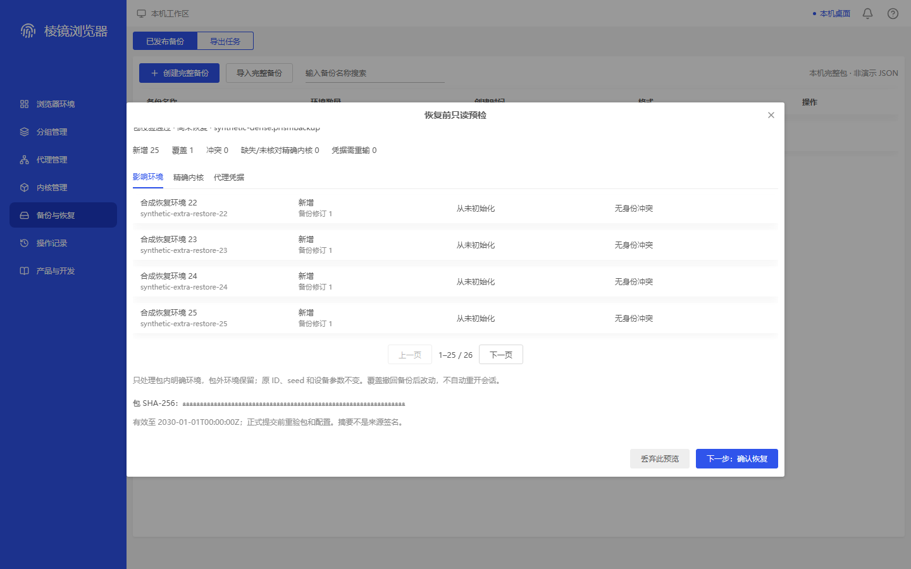
feeb2a5bc367128049ac6c8d23a8be2de9384819c6485f46efe6888ddac1b3f6
native-restore-dense-page-two · 1440×900
MAPPED — 预检200/162、1040×592，仅第26项实际可见，分页26–26/26、上页可用/下页禁用；offset0/25同一合成预检，表体118/118/0、正文494/494/0，包摘要与身份保护保留。footer y696/h58、单遮罩/最高焦点正常，未提交恢复，仅容器映射。
同类参考容器：proxy-bound；不是同名原商业执行。
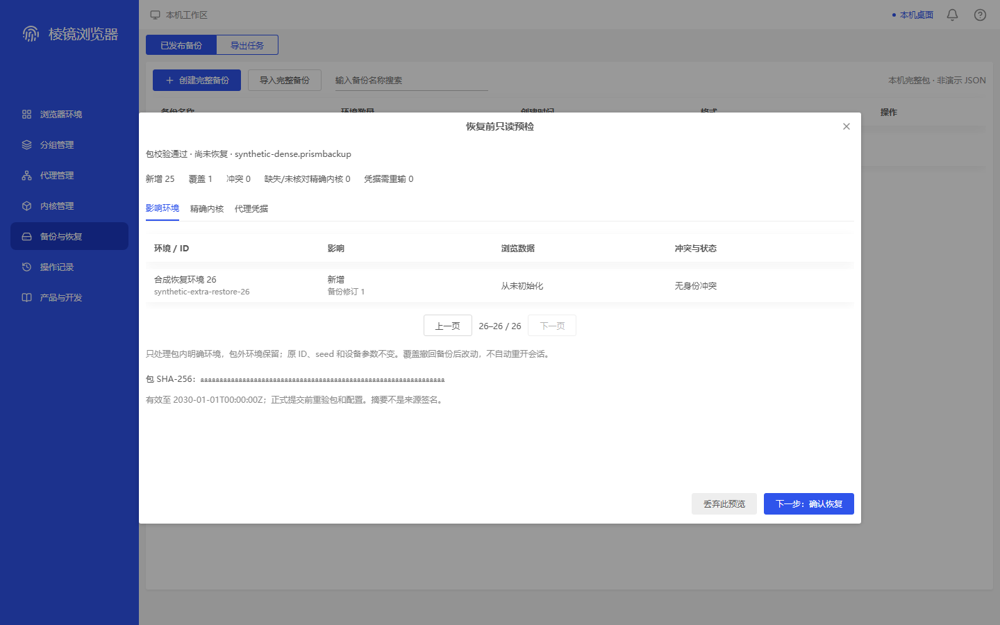
41557605a872a331abf665c23f2d435cf3ff127e710ef4329727d4827ac4b77e
native-restore-dense-page-error · 1440×900
MAPPED — 预检200/162、1040×592，offset0/25后第26项读取失败；tbody一行为错误占位，不是成功环境。STORAGE_READ_FAILED/重读/不提交说明完整，下一步禁用，表体118/118/0及正文494/494/0；单遮罩/最高焦点有效，未重读或恢复，仅失败容器映射。
同类参考容器：proxy-bound；不是同名原商业执行。

376b43de16bf4f55180cd70a111c6ec7aa54b9d3ce2b64834c14e597d062fa40
native-diagnostics-minimal-bottom · 1440×900
MAPPED — 最小诊断410/168、620×580，正文482/516/34滚底差0、footer y690/h58；不可读工作区、0/0/0、STORAGE_READ_FAILED、不可读取节1及有效期尾说明可读。实际展示有限安全投影，不是raw JSON所有字段；单遮罩/最高焦点有效，未保存，仅诊断容器映射。
同类参考容器：proxy-edit；不是同名原商业执行。

a5840d237f445993e339ebacc301d679f97f0aa44cc86349b0fd67f72471b7da
workspace-fault-diagnostic-bottom · 1440×900
MAPPED — 最高162诊断410/168、620×580，正文482/488/6滚底差0、footer y690/h58；可见frames2，160故障层inert/alpha0，仅162有0.4遮罩、最高焦点在内。partial数量/安全投影与有效期尾段真实可读，关闭/返回/保存无覆盖；未导出，仅容器映射。
同类参考容器：proxy-edit；不是同名原商业执行。

6aaf302b591acad2210e5d66f85fe24f6cd02b5cc5643cd10ae73cc1d4f35a26
workspace-cookie-fault-diagnostic-bottom · 1440×900
MAPPED — 最高162诊断410/168、620×580，正文482/488/6差0、footer y690/h58；可见frames3：80 Cookie及160故障层inert/透明，仅162有0.4遮罩且focusInside。Cookie有值但disc遮蔽，保存断言输入保留；通知不挡标题，安全投影尾段完整，未保存，仅容器映射。
同类参考容器：proxy-edit；不是同名原商业执行。
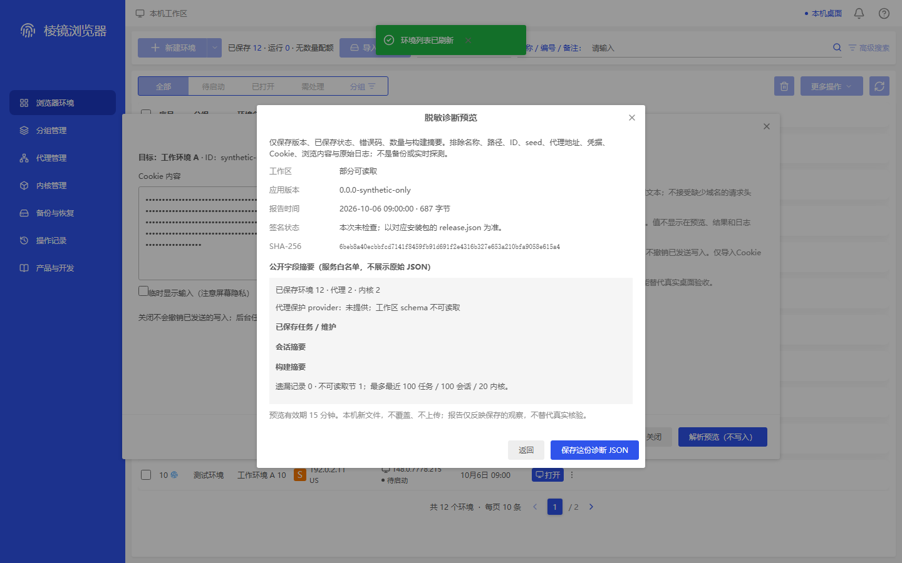
b7bdbc948443755c7a3c7adbfe7476a05b29bbeaf1a13adce5e4395581180a14
native-activity-session-old · 1440×900
MAPPED — 旧会话详情410/238、620×440，正文342/342/0、footer y620/h58；旧记录不能控制后来会话警示完整，没有核对或force入口，返回/关闭可见。单0.4遮罩、最高焦点在内，控制派发0；只映射只读详情容器，不验收真实会话控制。
同类参考容器：proxy-edit；不是同名原商业执行。
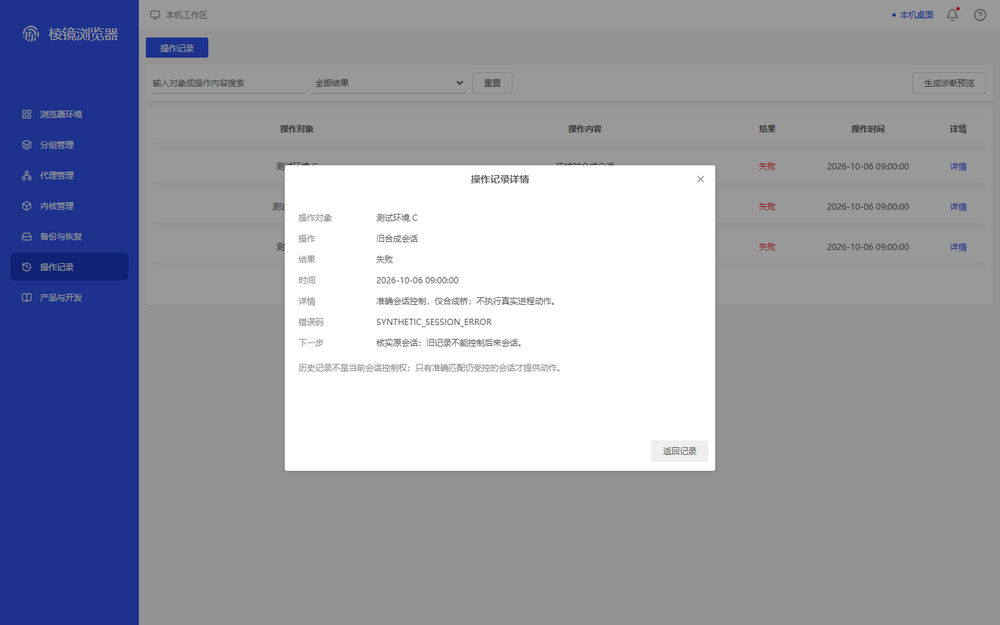
1250eebcd8fc19319e9e5592c94ecac0fb00b7bda59259d86404f3182e9c49c9
native-activity-session-reconcile · 1440×900
MAPPED — 详情410/238、620×440，正文342/342/0、footer y620/h58；准确匹配同一待核对会话，核对按钮可用，没有force入口，警示与返回完整。一个0.4遮罩、最高焦点在内；截图控制派发0，未点击核对，只读详情容器映射。
同类参考容器：proxy-edit；不是同名原商业执行。

89f2c5405e1842fe277336d913a7a0d9e8b790419ef1886cfd174eba19d6a6a5
native-activity-session-pending · 1440×900
MAPPED — 详情410/238、620×440，正文342/342/0、footer y620/h58；真实处理器的同会话核对在途，按钮禁用且返回/警示保留。单遮罩、最高焦点有效；准确合成Runtime.Reconcile挂起，清单保存释放/入口移除恢复断言，非本轮重跑；仅容器映射。
同类参考容器：proxy-edit；不是同名原商业执行。

686f8218afa2d23bbb6afb6133643a3451ef111ee34d6fd7f53b1030ea681b12
native-activity-session-force-confirm · 1440×900
MAPPED — 124危险确认520/349.5、400×217，身份/未保存内容警示、取消及红确认完整；122详情410/238、620×440现inert=true且alpha0，最高focusInside=true、单0.4遮罩。force/reconcile派发0；本图满足下层隔离，旧两条FAIL不倒改，仅确认容器映射。
同类参考容器：group-delete-confirm；不是同名原商业执行。
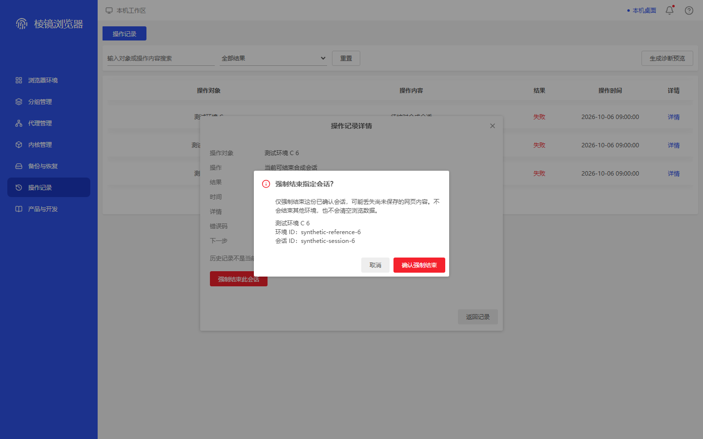
dc339a6537ed5b27ae01194aee26f7382d714a00d47b9f7f3566fb9ce2dd465c
native-groups-list · 1440×900
ADAPTED — 对应原组列表支持框架，两组各5明确为当前已读页，原各6的数据差异已说明；无独立空组/删除/归属/排序假入口。48px行与40px表头是图片及源码观察，该表未被本次selector采样，不称逐格DOM测量；未提交改组。
同类参考容器：group-list；不是同名原商业执行。
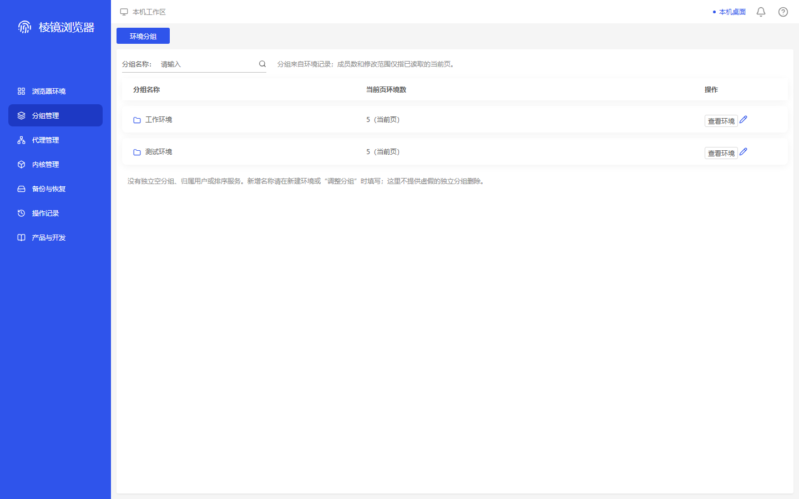
e276521b25b47feb857b0084fe9bddc058d07b851df3f68b550635a3d3734b87
native-groups-edit · 1440×900
ADAPTED — 原组编辑frame直接对齐为500×339.859、x470/y288.062、header40/footer51；native实际只修改已读当前页5个准确成员，原6成员/排序/归属裁掉且范围说明完整。取消/应用分组可见，单遮罩/最高焦点/shell inert正确，未提交；不冒称全组重命名。
同类参考容器：group-edit；不是同名原商业执行。
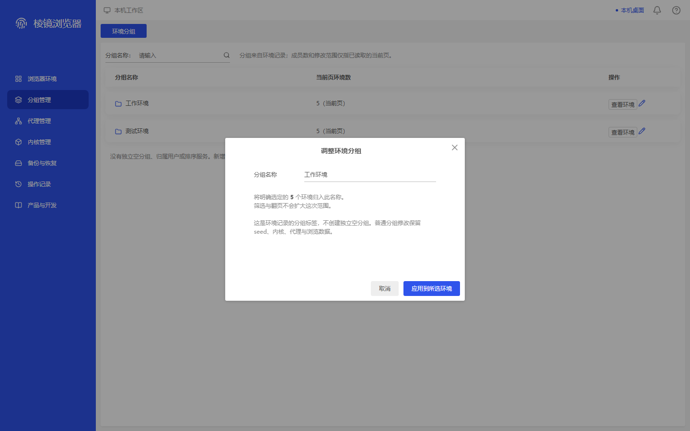
397f88f10ac62eb1fc067a06852ea46bfaa9b29c0f3f2b8c6854b087a532c54e
native-groups-no-results · 1440×900
MAPPED — 原组列表只有非空正文，当前native无匹配内容只借组页容器。搜索条件、空结果解释与环境标签/当前页范围说明可读，没有虚假空组实体或删除按钮；不把同容器当同名原空态，未提交修改。
同类参考容器：group-list；不是同名原商业执行。
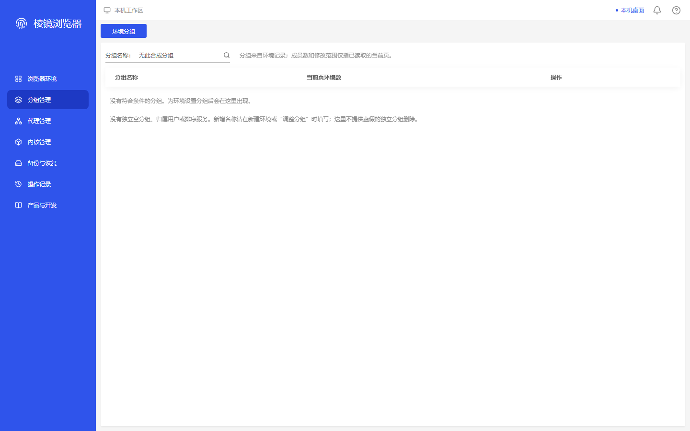
2fed6aba46606a2559651e7f3f1ca0603c9c450c470c304710e73d96f0d43cfb
native-environment-more-menu · 1440×900
MAPPED — native未选低频菜单复用同类frame，并非原单行菜单；支持批次结果，精确选择动作按无选择禁用，清除筛选可用。菜单和固定分页可见，没有运行/取消任务提交；与不同菜单内容不互相替代。
同类参考容器：environment-row-menu；不是同名原商业执行。
abdf95bc3204fd023299ef1b989d72b76aec67f9ccd7d57540e8f6fb07e37262
native-environment-fifo-menu · 1440×900
MAPPED — 新增合成starting/FIFO条、取消排队入口和错误/资源/待保存密集行，原无同名状态；低频菜单只借176px容器。31px状态位使表头y193.859/分页y825.859，白行48px保持，可见控件未切边；未提交取消/控制，不是实际启动队列验收。
同类参考容器：environment-row-menu；不是同名原商业执行。
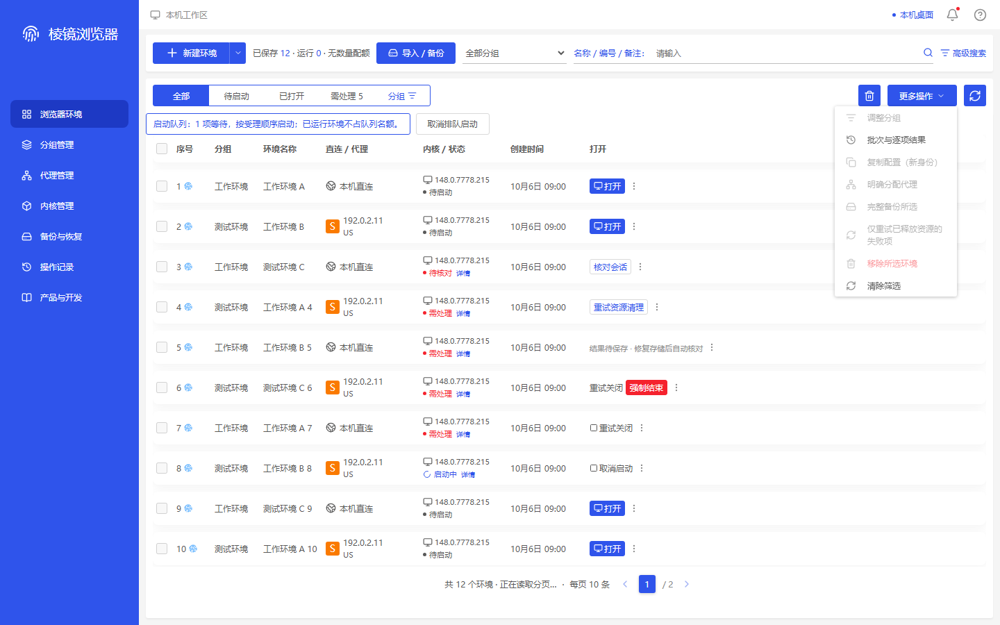
ab56db344aa8f7036f2840a3f8e6ae424f258866a62e822d3b2a657c80c8d3e7
native-environment-create-no-kernel · 1440×900
MAPPED — 无verified构建的指纹区域分支，不是原创建顶部态；660px主frame/top40/bottom8、header40/footer71、外rail40。正文741/1556/top815到尾端，准备引导与缺内核说明可见，创建/创建并打开禁用，create/start=0。刷新短时提示不是创建成功，临时遮标题左侧，不认证稳定顶部标题。
同类参考容器：environment-create；不是同名原商业执行。
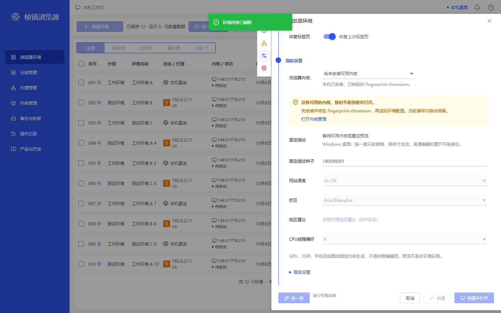
d960511332b11aa5ea0fd73755b7c26fa26df7830f7a859411889af7d5b04ac8
demo-proxy-check-details-unchecked · 1440×900
MAPPED — 620×186 短详情明确尚未检测、没有真实出口/认证；正文与固定确定按钮不裁剪；只有代理编辑容器映射，未制造原检测执行图。
同类参考容器：proxy-edit；不是同名原商业执行。
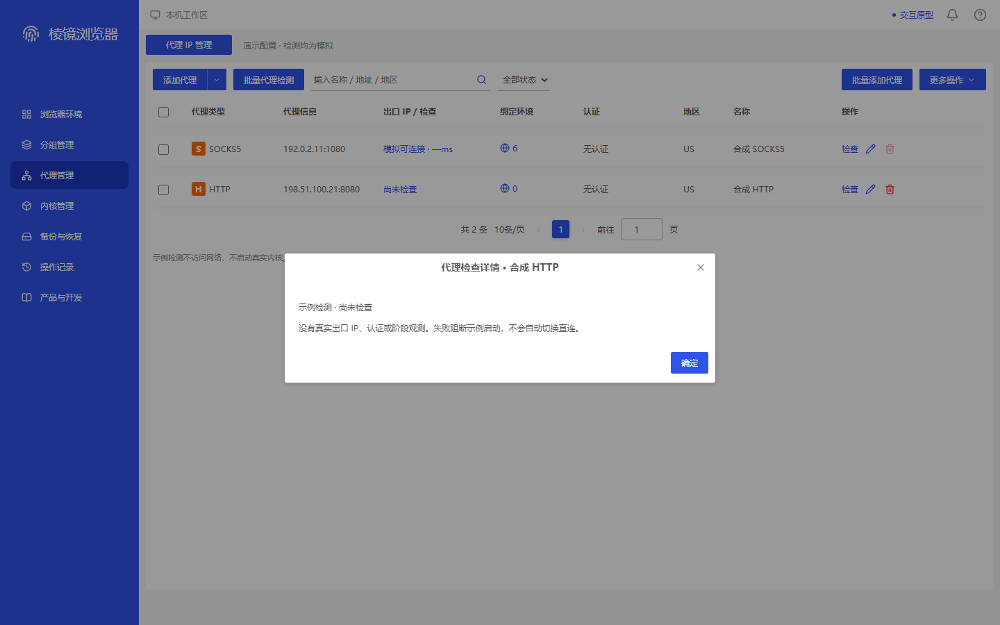
f1d94b89b069ae37498d95326050e6f8c2c4e5fdc349d28a1372426f7aca9845
demo-proxy-check-details-connected · 1440×900
MAPPED — 620×186 短详情，模拟可连接且没有真实出口/认证，固定确定按钮完整；原无同名检测详情，仅借代理编辑frame，不是启动许可。
同类参考容器：proxy-edit；不是同名原商业执行。
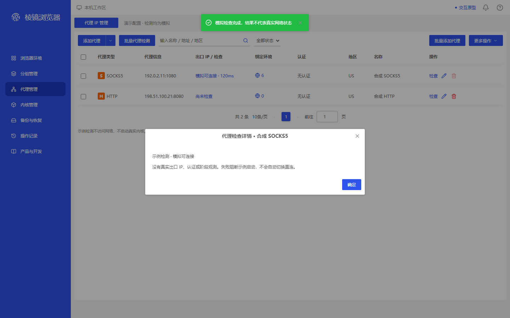
f520d638ef10cbae8cdae68050282138f8bb8da1ef1b61e9956b2401842aac8a
demo-proxy-check-details-failed · 1440×900
MAPPED — 620×186 短详情，明确模拟失败且绑定不退直连；无真实出口/认证，确定按钮可见；原无同名详情，不把完成提示当连接成功。
同类参考容器：proxy-edit；不是同名原商业执行。
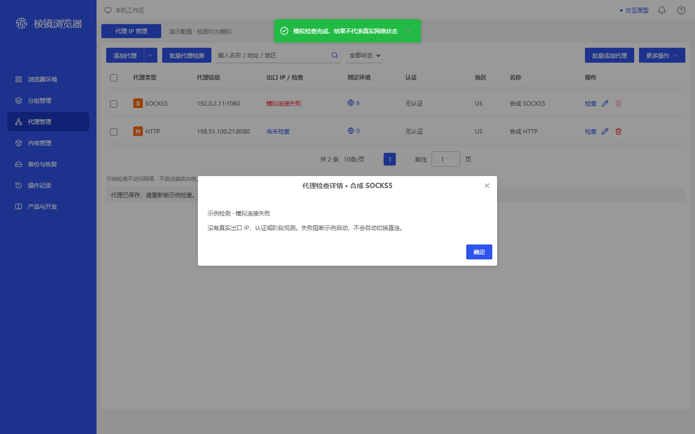
ab9339e90828e7aac81e458f87b9b0a3d953a7e459f9adc064570d35bc728068
native-proxy-check-details-current · 1440×900
MAPPED — 620×544 当前匹配报告，合成IP/36ms/三个阶段及TLS/DNS边界完整，确定footer可见；明示观测不是启动许可。原没有独立详情图，仅620代理frame映射。
同类参考容器：proxy-edit；不是同名原商业执行。
e0a9c785cd421899f5fb0a02a17fdeefc5f01d55b1d6bb5a4a9221f82a25aaa5
native-proxy-check-details-failed · 1440×900
MAPPED — 620×574 失败详情，未取得出口、红色PROXY_AUTH_FAILED、认证失败/目标不支持且不退直连；三行阶段与固定确定不裁剪。报告不作启动许可；无原同名操作图。
同类参考容器：proxy-edit；不是同名原商业执行。
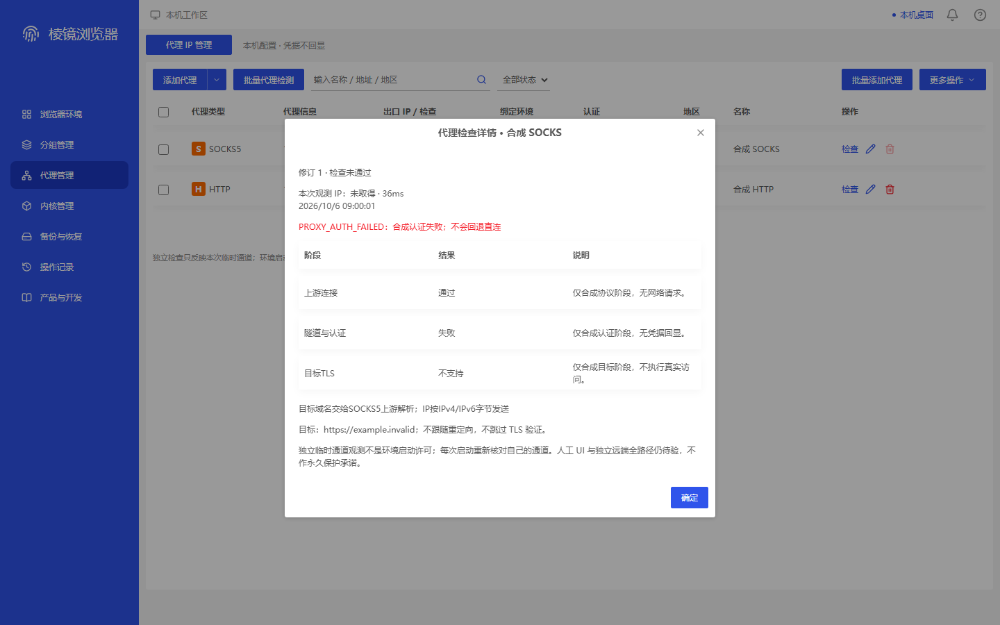
7f49b15cd7580dba1c748f29c1510a30277964cf603aa4937e51221f853b6fc5
native-proxy-check-details-stale · 1440×900
FAIL — 620×234框和确定按钮完整，旧IP/阶段报告已正确隐藏，但首行仍说本次检查通过，与暂无本次安全报告冲突。NativeProxyManager:88须按当前匹配报告/任务派生标题，不能只用旧connected。
同类参考容器：proxy-edit；不是同名原商业执行。
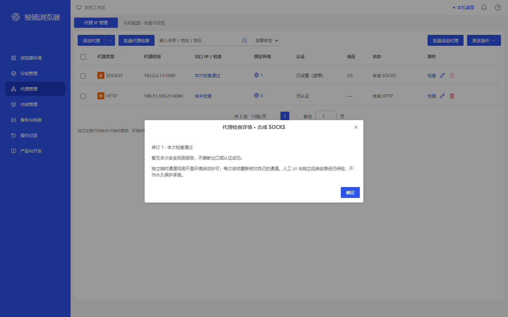
3ca3878f47cfbdcf196111fe51526d9ef6a8d8c696e00b4131e54bd07d661249
native-proxy-check-details-empty · 1440×900
MAPPED — 620×234 空详情，尚未检查/没有本次安全观测、不推断出口或认证成功；无阶段/IP/假成功，固定确定按钮清楚。无同名原详情，容器映射而非严格1:1。
同类参考容器：proxy-edit；不是同名原商业执行。
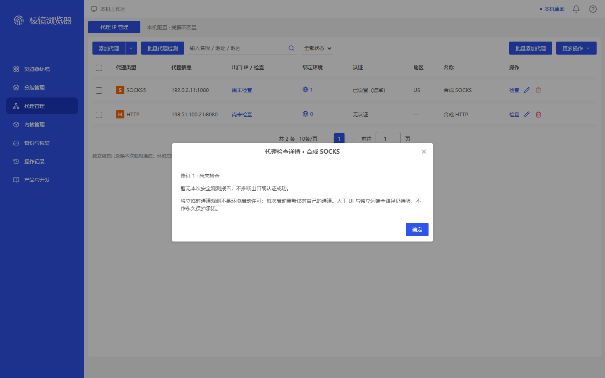
07f0dd53931b9f3dc697413f0d0f3d576a9ebba7b7dbae6d8d19f6d275949d99
native-proxy-check-details-running · 1440×900
MAPPED — 620×544 在途报告未完成、出口未取得、认证进行中/目标不支持；保存记录首行尚未检查，不是成功终态。阶段和启动许可限制完整，固定确定可见；无原同名运行图。
同类参考容器：proxy-edit；不是同名原商业执行。
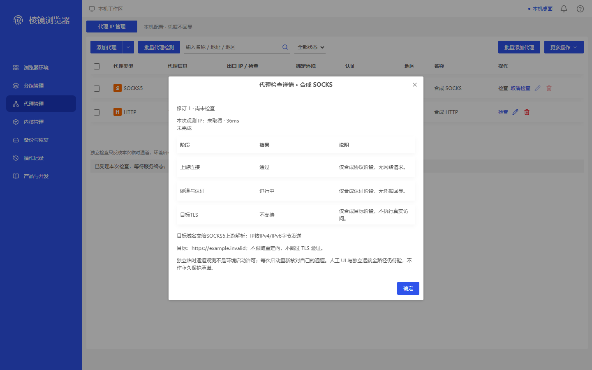
f3d342e4c4c2d44f88fd3192f41514eb1e216d79235c592fdc169f1401f9c5af
native-proxy-check-details-persistence-pending · 1440×900
MAPPED — 620×544 待保存报告明确尚非持久终态，合成IP和阶段可读但不作启动许可；确定footer不遮正文，列表仍标结果待保存。原无同名任务图，仅620容器映射。
同类参考容器：proxy-edit；不是同名原商业执行。
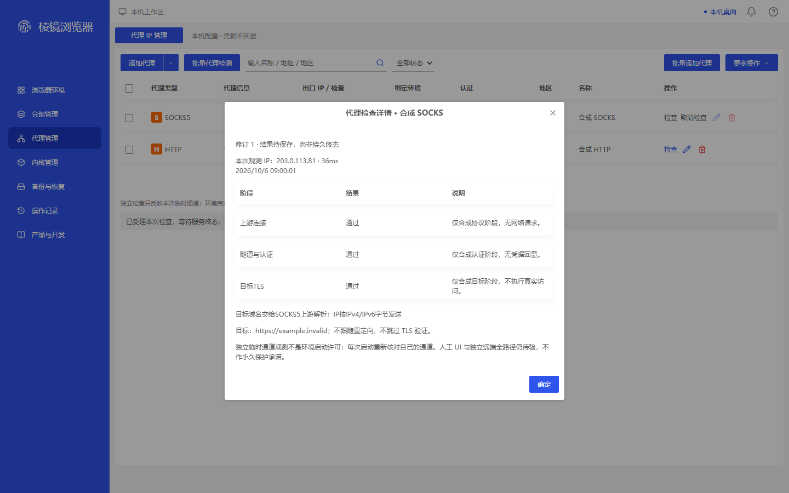
e88b1f7d51abe6ec329d563f5c767048c2e5710141c8fee0357558825b192927
native-proxy-edit-replace-authentication-top · 1440×900
ADAPTED — (410,95)620×726贴近原编辑位置/高度；32px下划线密集表单，明确replace和两个新秘密遮罩，旧值不回填。正文全容纳、取消/保存footer可见；安全字段替换商业字段，未提交更新。
同类参考容器：proxy-edit；不是同名原商业执行。
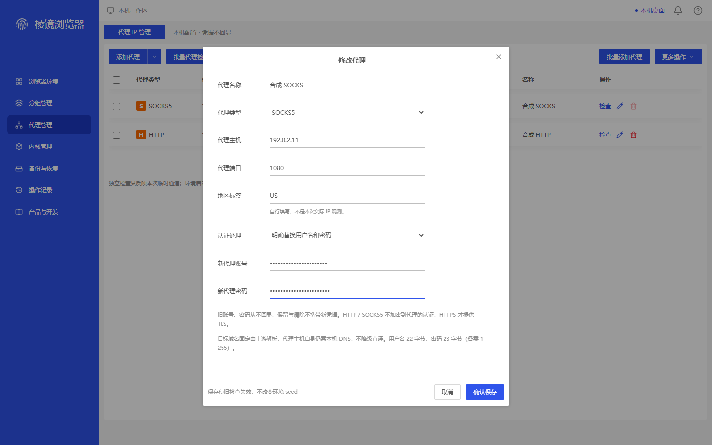
8682c73d7c94cdcaf3f89986788282bce72904920c382d6daf1295ebb568e100
native-proxy-edit-replace-authentication-bottom · 1440×900
ADAPTED — 620×726编辑近似原620×726.156；新账号/密码各password遮罩，旧值不回显，TLS/DNS和固定保存footer完整。body628/628、scrollTop0，与top同SHA，bottom不是非零滚动证明。
同类参考容器：proxy-edit；不是同名原商业执行。

8682c73d7c94cdcaf3f89986788282bce72904920c382d6daf1295ebb568e100
native-proxy-bound-six-selected-comparable · 1440×900
ADAPTED — 原/实现均6行6选中；(200,162)1040×592近似原1040×592.25，不是1050。真实scope六个合成ID，支持列替换备注、精确分配footer完整；只全选该页，未提交分配。
同类参考容器：proxy-bound；不是同名原商业执行。
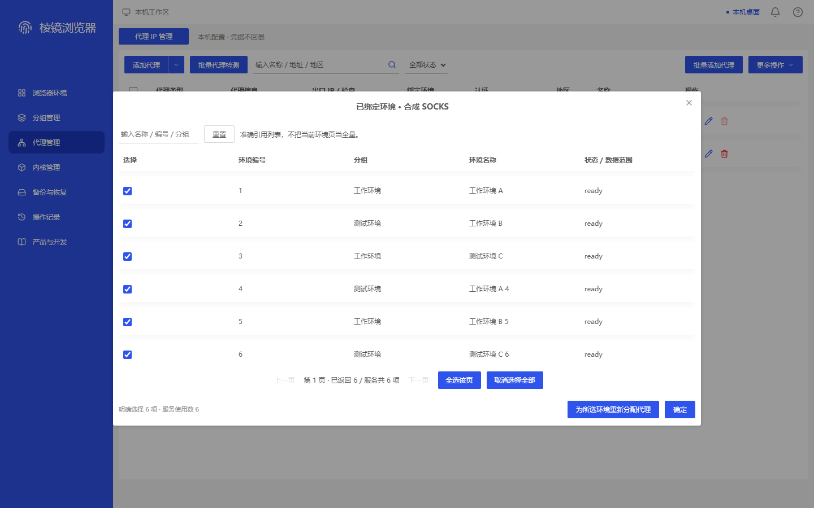
08a6b27a2a723d151f1a7c05ee896fd2e440b3030c5c6433a336d27b52441aa5
native-row-owned-control-lost-force-confirm · 1440×900
MAPPED — 仅映射400px危险确认，无同名原Job业务；400×217、x520/y349.5，准确环境/当前会话及未保存风险完整，取消/红色确认可见。canControl=false但canForce=true、needsReconcile=false；120层唯一frame、焦点在内、单遮罩/shell inert，force/reconcile调用0。无下层活动详情，不能据此认证其隔离或真实Job。
同类参考容器：group-delete-confirm；不是同名原商业执行。
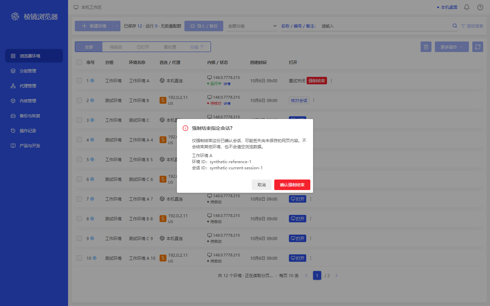
7b57ba0053c657c024e65bc1d41137897cf0069fa58c704229aa3db1d4494968
native-activity-owned-control-lost-force-confirm · 1440×900
MAPPED — 准确会话确认520/349.5、400×217，危险文案及取消/红确认完整。普通通道不可用但服务canForce=true、needsReconcile=false；124最高焦点在内，122详情410/238、620×440已inert/透明，只有一层0.4遮罩。force派发0；不声称取消恢复焦点实测或真实结束。
同类参考容器：group-delete-confirm；不是同名原商业执行。
9c21f2f1a787731ce36d41285640de6f192b5a105c5f02354755352a04e6e48a
demo-backup-upload-hover · 1440×900
MAPPED — 导入演示快照窗470/278.5、500×359，正文261/261/0、footer58；上传按钮hover实际白字/白边、白色0.1透明背景，蓝头上清晰，焦点在最高层且单0.4遮罩。文件未选、预览禁用，未调用选择器；仅导入容器映射。
同类参考容器：proxy-import-text；不是同名原商业执行。
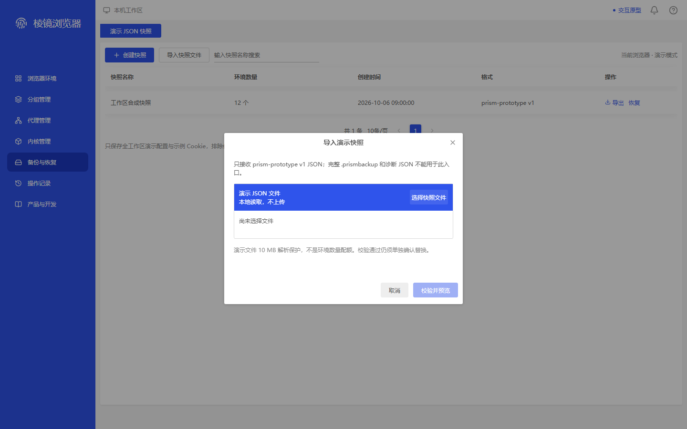
2ea872779f1fa9b5db74b42965febbb867f253b50204b9cb28e078660bb23978
native-backup-upload-hover · 1440×900
MAPPED — 本机备份导入窗470/278.5、500×359，正文261/261/0、footer58；按钮hover白字/白边和白色0.1背景在蓝头可读，焦点在最高层、单0.4遮罩。prismbackup与演示JSON界线明确，未选文件/预览禁用，无选择器或导入提交；仅容器映射。
同类参考容器：proxy-import-text；不是同名原商业执行。
2db565c23d134755431b8cdb52e735ebe4129df265434b74b6d3492f02ce856e
current-demo-guide-user · 1440×900
MISSING — MISSING_DIRECT_HELP：使用指南标题/正文真实呈现，520/151/900/730、scroll2892/top0；索引300、正文900对应25%/75%。原40px标题归一化后正文另下移约52.42px，为真实只读工具条适配；仍没有完整原指南。
同类参考容器：settings-page；不是同名原商业执行。
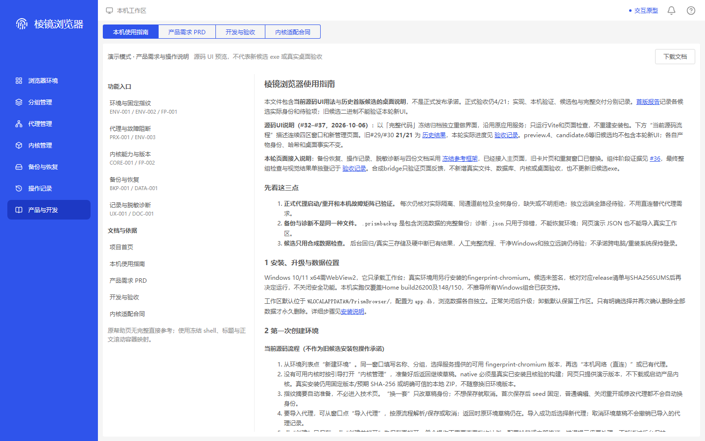
2e606e87be4abd177d5602bfc4f82fc213b2a68491dfe94e0978619c35624b79
current-demo-guide-user-bottom · 1440×900
MISSING — MISSING_DIRECT_HELP：验收/能力依据及最后链接实际可见，正文520/151/900/730，730/2892/2162差0；索引300、四页签和上方下载固定，不是loading。真实滚底与比例修复是局部证据，不证明完整原帮助已恢复。
同类参考容器：settings-page；不是同名原商业执行。
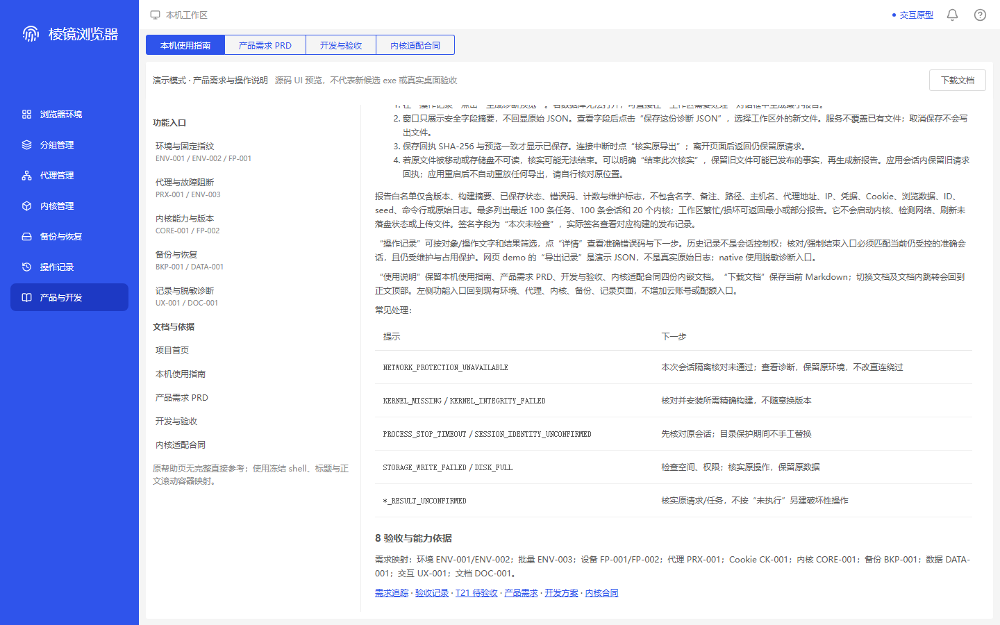
f586d14bebb2100601de986d1b440ee549eceddb0d9faba147c5b86a29de865e
current-demo-guide-prd · 1440×900
MISSING — MISSING_DIRECT_HELP：PRD标题、正文与表格确实加载，520/151/900/730、scroll9326/top0；25%索引300已修复，12px正文与Markdown层级为内容适配。未见未解释横裁切，但原基础设置不补同名帮助参考。
同类参考容器：settings-page；不是同名原商业执行。
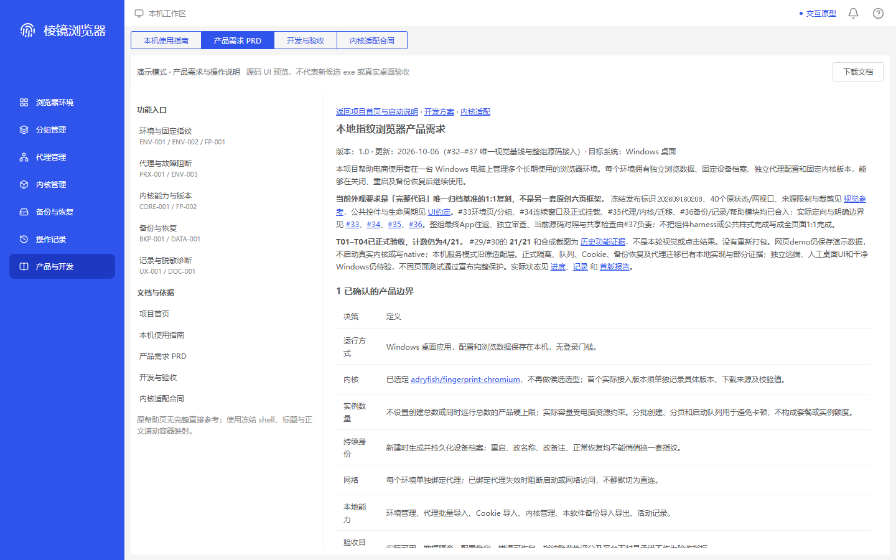
4126a9112a0674a6899dec64bf8ee63837722263683d62c9331675d5cbe9d798
current-demo-guide-prd-bottom · 1440×900
MISSING — MISSING_DIRECT_HELP：来源边界末章及最终说明真实完整，正文520/151/900/730，730/9326/8596滚底差0；索引300、页签与下载保留。底部上缘从前表滚出是指定位置，不是末段被遮；不把设置候选代作原PRD。
同类参考容器：settings-page；不是同名原商业执行。
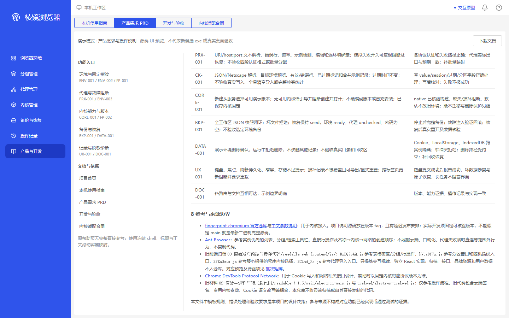
1c11b64320cf2818d71e8090be71f53119131363cc86253c4c41891139d70a21
current-demo-guide-development · 1440×900
MISSING — MISSING_DIRECT_HELP：开发方案标题、正文与层级表真实可见，正文520/151/900/730、scroll17322/top0，索引300与25%相符。四文档/Markdown/上方下载为只读适配；原40px桌面标题先归一化，不声称原指南通过。
同类参考容器：settings-page；不是同名原商业执行。
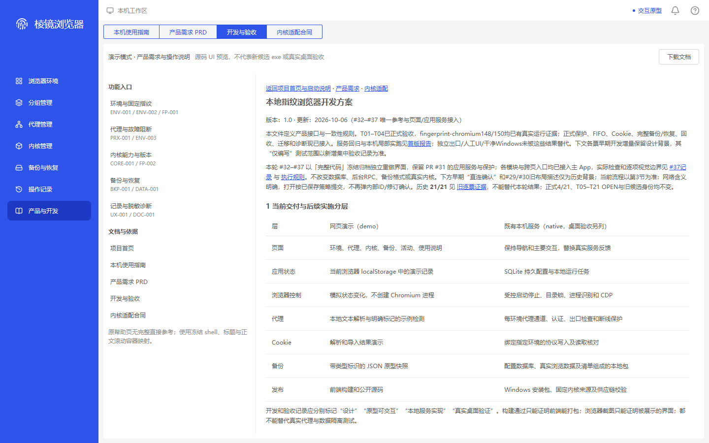
c9e9c5ce595d31c9b2216720a1e40b257e5e07d878af1ec1a3c4cd3f1bb58e0b
current-demo-guide-development-bottom · 1440×900
MISSING — MISSING_DIRECT_HELP：开发方案尾章与最终说明实际呈现，正文x520/y151、900×730，730/17322/16592滚底差0；索引300保持25%，四页签/下载未滚走。原基础设置只补容器，不补完整原帮助。
同类参考容器：settings-page；不是同名原商业执行。
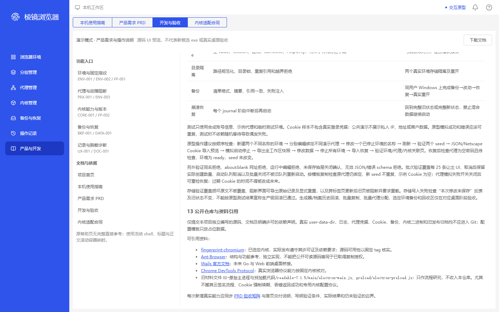
c4926d40e1c617ec940d6fe3ff103112b742c84eca3610d8bfb704d493fb15da
current-demo-guide-kernel · 1440×900
MISSING — MISSING_DIRECT_HELP：内核合同实际标题、需求表与正文，520/151/900/730、scroll9595/top0；索引300保持25%，不再漂移为230。四文档和只读下载有真实内容依据，但原设置七页签不提供同名完整原指南。
同类参考容器：settings-page；不是同名原商业执行。
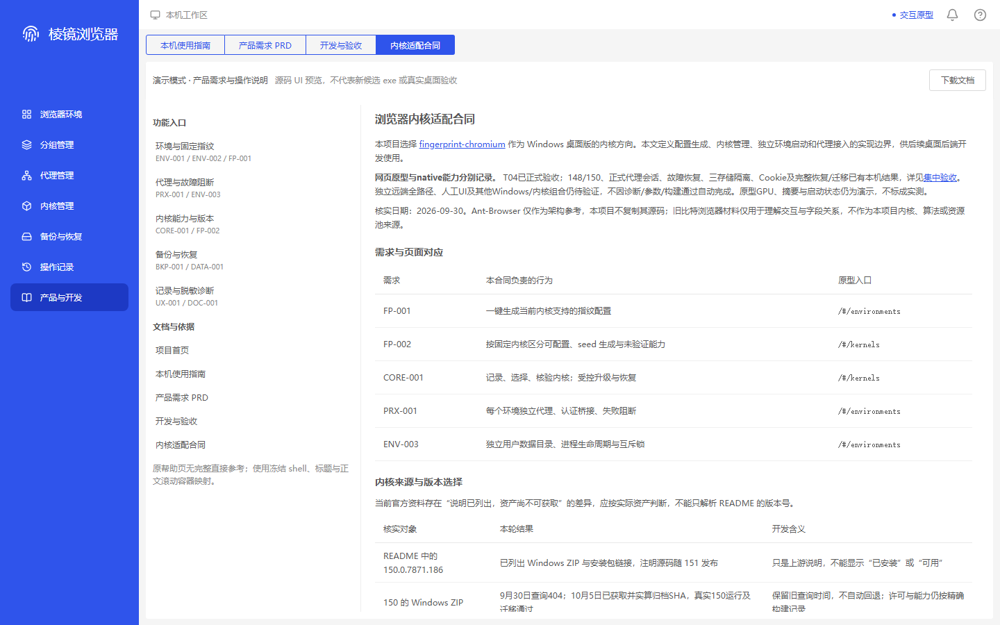
fd14ffcd9702584bedb8c8f13b0d6931a8c1dd917a7abe8042b40d7db48bd252
current-demo-guide-kernel-bottom · 1440×900
MISSING — MISSING_DIRECT_HELP：实现完成条件及许可/未验尾说明完整，正文520/151/900/730，730/9595/8865差0；索引300、四页签及下载固定。设置末项不是内核指南末段，比例修复不能消除直接参考缺失。
同类参考容器：settings-page；不是同名原商业执行。
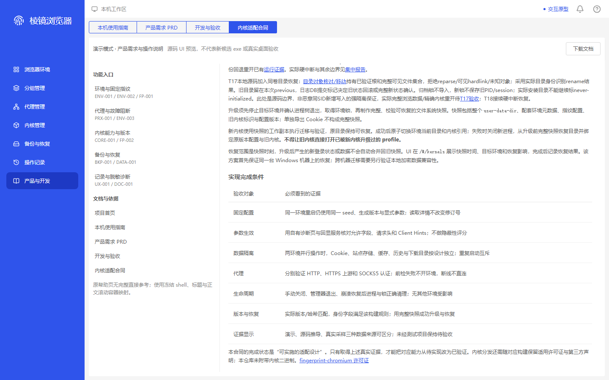
4b14c157576ba69cde0e630678c1922d02267bdf4b4d38e6935ba811a8d76a5b
native-migration-current-select · 1440×900
MAPPED — (200,162)1040×592 选择窗，尚未选定环境/目标时差异禁用；安全说明、查询分页和关闭footer完整。原没有迁移选择图，按1040列表容器，不把左侧创建drawer说成直接参考。
同类参考容器：environment-create；不是同名原商业执行。
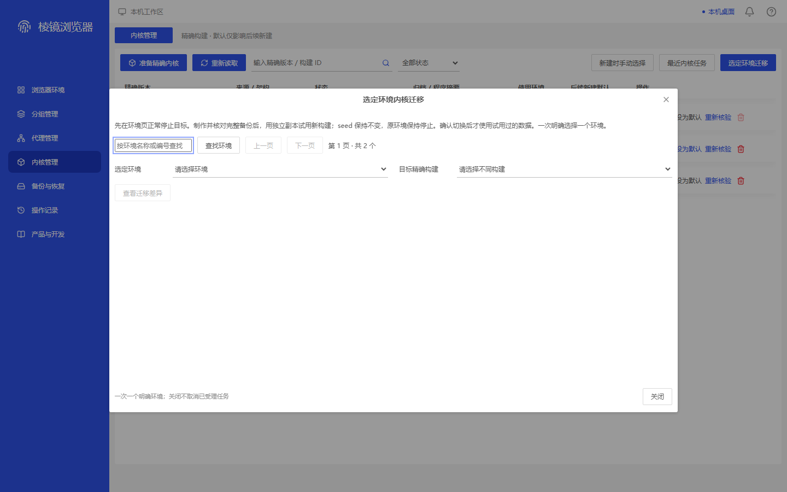
9cf3370f99f2cb4f30b80bbd4d39d7f7783f637ca49c68ace94f7f637b25e647
native-migration-current-diff · 1440×900
MAPPED — 1040×592 双列选择和两行差异，原修订7/固定seed180000035/精确构建/绑定代理失败不直连可见，footer清晰；技术详情折叠。正确容器为proxy-bound，不是配对左侧660 drawer。
同类参考容器：environment-create-fingerprint；不是同名原商业执行。
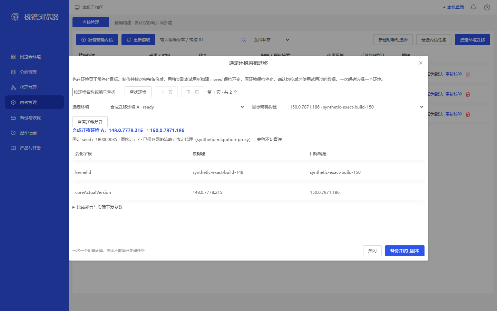
9a2950849fab8aba48ed72d3d8e2e5d7ba8f70473088b6583ce2887b20c784b2
native-migration-current-trial-confirm · 1440×900
MAPPED — 400×220 试用确认，仅独立副本/原环境停止/保存代理不直连，checkbox未勾选且确认禁用；尚无Prepare，footer完整，低层inert。短危险确认容器映射，无原试用执行图。
同类参考容器：group-delete-confirm；不是同名原商业执行。
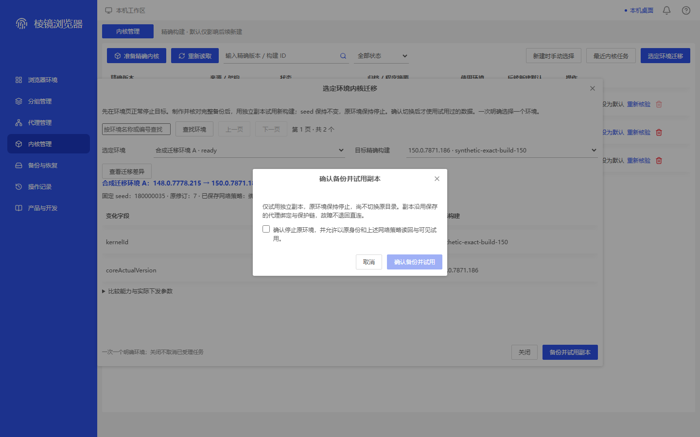
20e3da27d1db01d554eec8d8661b580368e9da99761c4bf42787a758aa4b0779
native-migration-current-trial-starting · 1440×900
MAPPED — 400×373 开始读参数合成阶段，备份已核对但退出/提交未完成，尚无旧新采样；取消原任务与关闭可见，不提供切换。无原同名启动状态，仅400结果frame映射。
同类参考容器：proxy-edit；不是同名原商业执行。
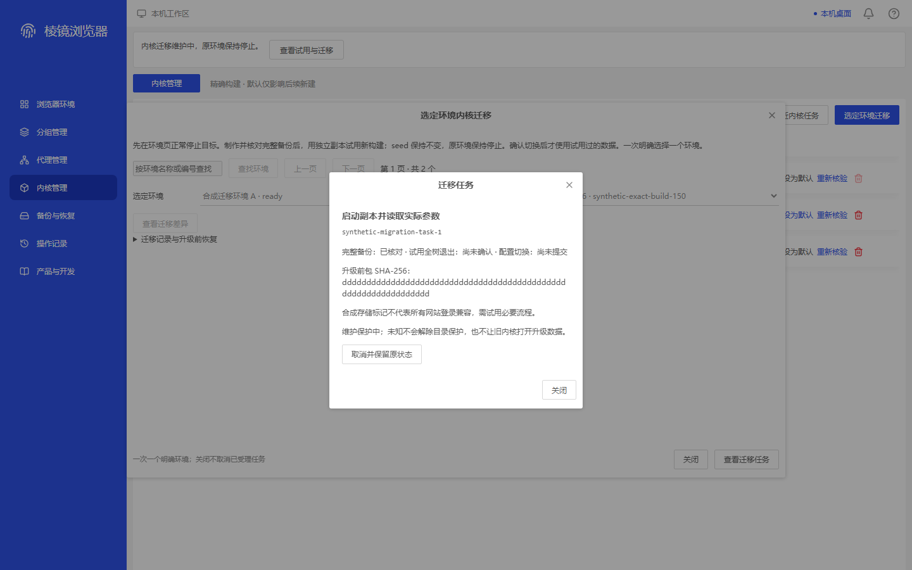
04cbcc848a6067b33daf9e2fb94768ca27e1e24961758500e50f16adbc560122
native-migration-current-trial-running · 1440×900
MAPPED — 400×505 正在试用合成副本，退出未确认/未提交，正常停止与取消保留原状态并列；旧新合成读回和网站兼容限制完整。400结果容器映射，非真实运行证据。
同类参考容器：proxy-edit；不是同名原商业执行。
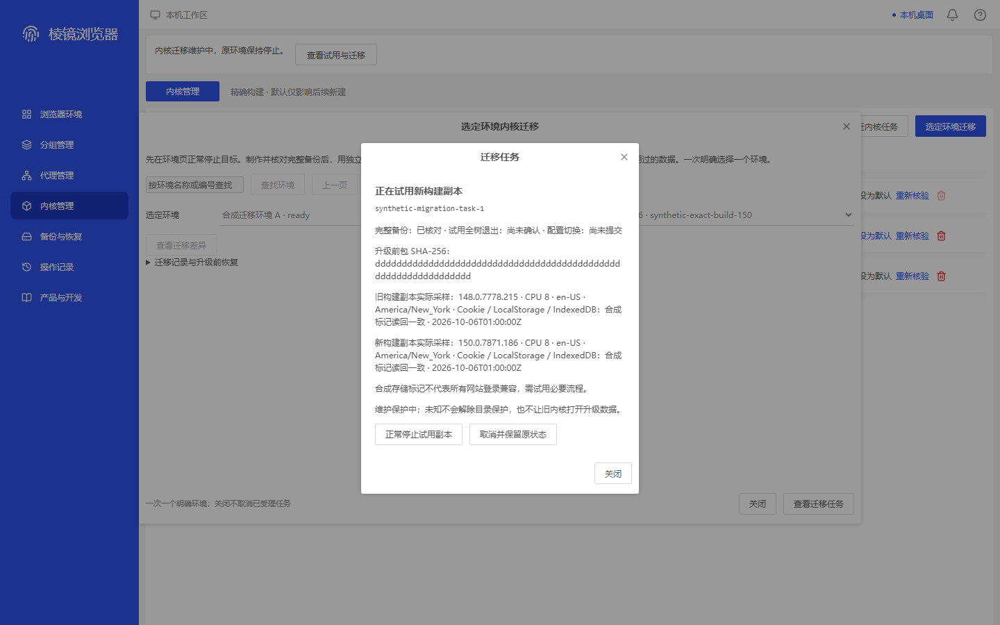
3e6cd85eb406f81d7404027b0bbf8f03d73f9e53a748606379e1c3b89cdfa4fe
native-migration-current-ready · 1440×900
MAPPED — 400×505 结果明确副本已停止等待确认，退出已确认、配置尚未提交；明确切换与保留原状态按钮分开且可见，固定footer不挡正文。无原同名ready图。
同类参考容器：proxy-edit；不是同名原商业执行。
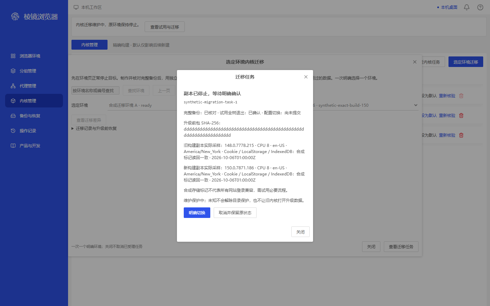
3890ea4ee19240d9547f2a3b546c9f398e29edd9fa1dff9aeacdf8950572be36
native-migration-current-switch-confirm · 1440×900
MAPPED — 400×202 最上层切换确认，固定seed/默认不变/升级前完整恢复警告清晰，未勾选且确认禁用；commit调用0，之前一次Action是正常停止。较低两窗inert、单遮罩；无原同名切换图。
同类参考容器：group-delete-confirm；不是同名原商业执行。
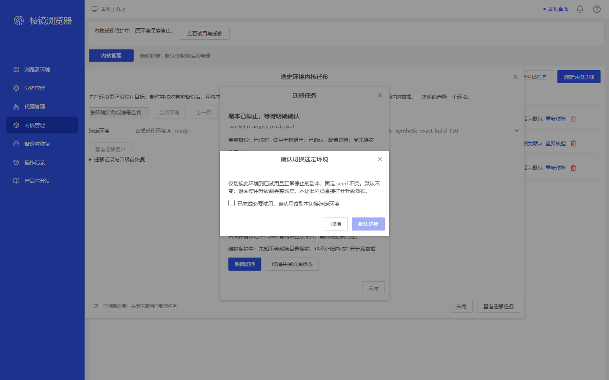
bc9ac4f5317d7bd1cd0025145809cc5c16e794be55cd408d7701498a09e5c0eb
native-migration-current-committed · 1440×900
MAPPED — 400×505 结果明确配置已提交仍核对目录、维护保护未解除；关闭footer完整，取消按钮不误作未提交取消；原无同名状态，按400结果容器而非620代理表单映射。
同类参考容器：proxy-edit；不是同名原商业执行。
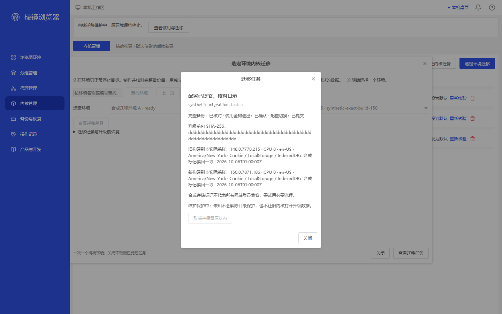
daeecf901f52135eb98faeae9268942e448ef1da998617daffe97b14dad1d34a
native-migration-current-completed · 1440×900
MAPPED — 400×444 迁移完成合成终态，备份/退出/提交摘要均明确，旧新采样及网站兼容警告可读；仅关闭、无遗留切换按钮。无同名原图，不证明真实迁移完成。
同类参考容器：proxy-edit；不是同名原商业执行。
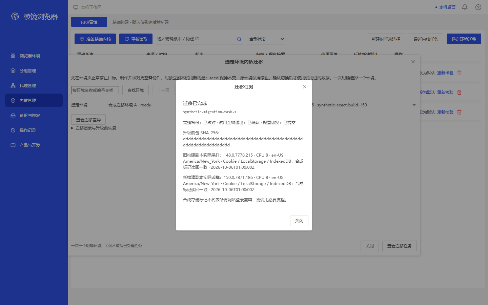
60dad287f50220e3e0cba90e895f192d41b7d7097630d343a4a7166a2a5b97ff
native-migration-current-protected · 1440×900
MAPPED — 400×594 结果未确认、保持保护和错误原因完整，原任务核对入口可见，不允许切换/未授权停止；下层inert、单遮罩、footer仍在屏内。无原同名保护状态。
同类参考容器：proxy-edit；不是同名原商业执行。
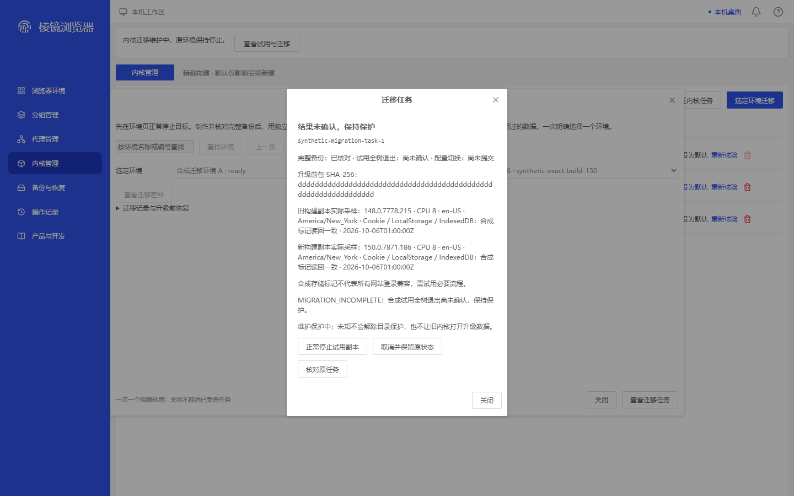
1fab7660a67936259a65cf2c9c751f0ec7781f096591e9eb5779e53ee414b586
native-migration-current-cancelled · 1440×900
MAPPED — 400×444 原任务结果明确原状态已保留，备份/退出/未提交摘要及旧新合成采样可读，只保留关闭；1040选择窗inert，单遮罩。原无同名取消图。
同类参考容器：proxy-edit；不是同名原商业执行。
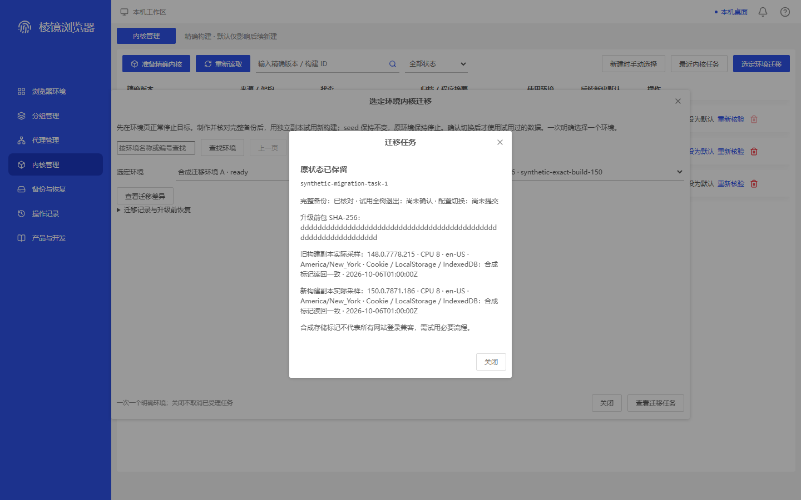
77633c3bc960a1bb8d12c9b1e8204f2d3d52c1139ad54bf5c48996b2f3954f4b
native-migration-current-upgrade-preflight · 1440×900
MAPPED — 1040×592 迁移历史及升级前预检显示恢复1/覆盖1、缺内核0/冲突0和verified-bytes旧构建，撤回数据警告与确认入口完整；仅预检不提交。映射proxy-bound容器，不是同名原业务。
同类参考容器：proxy-bound；不是同名原商业执行。
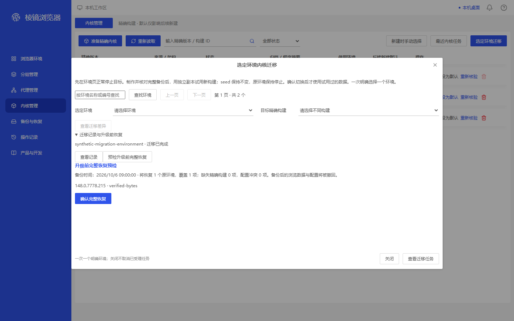
38737848d1f9d5c834bf56b1fa574ee56e0a0e9048d113f78c9ba63c19a1eca1
native-migration-current-upgrade-confirm · 1440×900
MAPPED — 400×262 最高恢复确认三项警告未勾选：覆盖1项、凭据重输1项、正常停止；确认禁用且ApplyRestore=0。原ID/seed/包外保留说明完整，层122高于92且单遮罩；无同名原恢复图。
同类参考容器：group-delete-confirm；不是同名原商业执行。
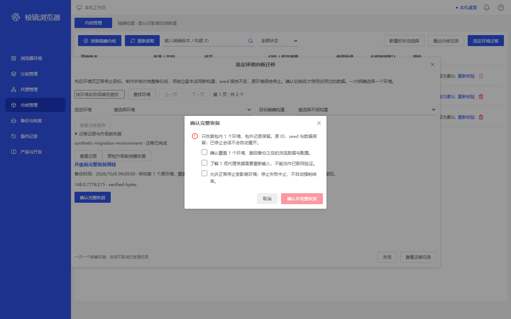
c7b108d91c03b1129a6c1e99fd0248cc0f958fdebc081452e6e180db51c4f3c8
native-migration-current-upgrade-result-rollback · 1440×900
MAPPED — 400×266 恢复未完成已回滚，环境1/切换0/未完成和红色回滚错误清晰；旧状态保留但没有成功，返回footer不裁剪。400结果frame映射，无同名原恢复执行图。
同类参考容器：proxy-edit；不是同名原商业执行。
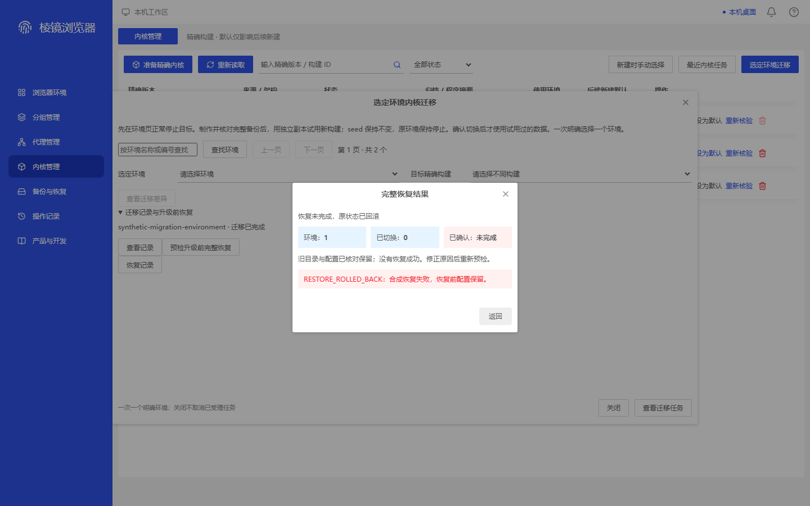
efad97b84316037962162b28bedfdda67633de3a751a22e20d10e2aec80f1fcb
native-migration-current-upgrade-result-protected · 1440×900
MAPPED — 400×361 恢复未完成/维护保护，环境1/切换0/未完成与红色错误一致；保留日志/目录保护和原核对建议，重试入口及返回完整。单遮罩、最高层122；原无同名状态。
同类参考容器：proxy-edit；不是同名原商业执行。
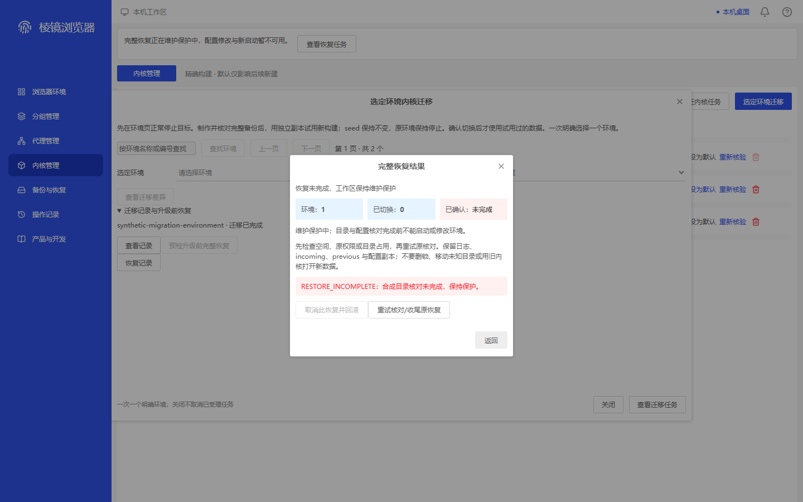
5a7ff009bb9a0b05fd1f484d8cf137d97f3746f90dacf969e1f1adb010357776
native-migration-current-upgrade-result-completed · 1440×900
MAPPED — 400×240 完整恢复合成完成，环境1/切换1/已确认完成，原ID与seed保留并提示原Windows用户核验；返回footer可见、低层inert。400结果映射，不证明真实备份/磁盘恢复。
同类参考容器：proxy-edit；不是同名原商业执行。
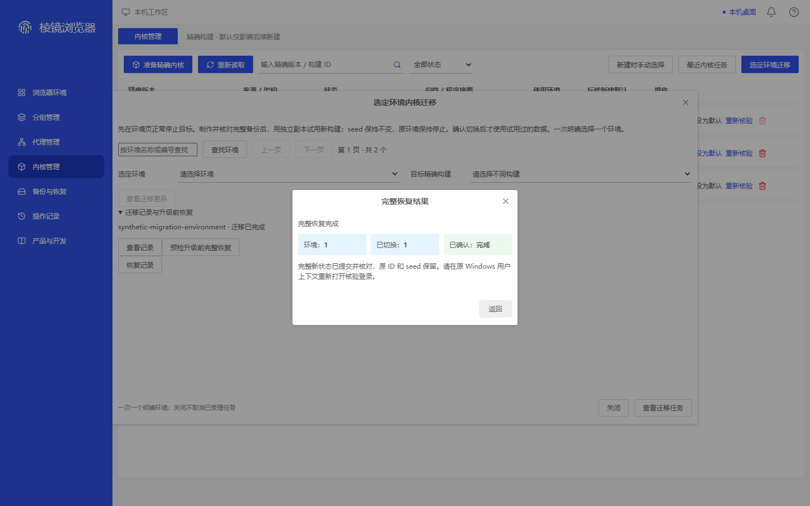
6ca90c3afcfe3cdb9467903b1eed43f61166c0f28070ec2b14a8e8eeccdc2bd1
gap-shell-workspace-loading · 1440×900
MAPPED — 没有同名原加载业务，500×167、x470/y366.5公共工作区frame；WORKSPACE_LOADING重新读取确实禁用，无诊断入口。最高160层焦点在内、唯一遮罩、shell inert，不能与冲突的实际可用恢复按钮混淆；没有读取/写入真实工作区。
同类参考容器：group-delete-confirm；不是同名原商业执行。
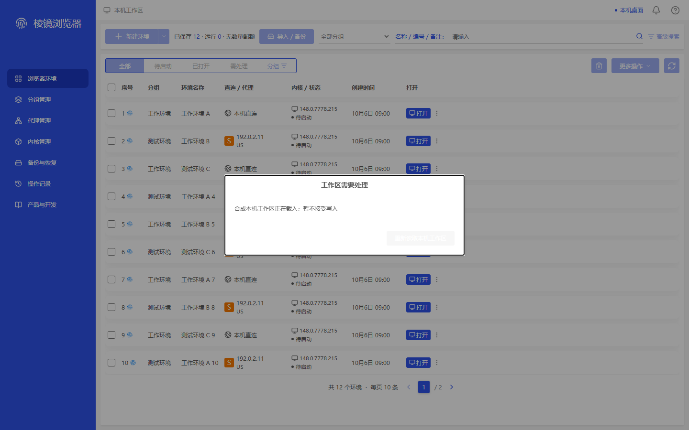
d61ea3179ee187a81486f246ebd011a5fecd6f71d29d8ccabe6a96d451ca80cf
gap-shell-demo-damaged-record · 1440×900
MAPPED — 没有同名原坏记录界面，仅公共工作区frame映射；500×167、x470/y366.5，最高160层单遮罩、焦点在内、底层shell已inert屏蔽。原记录保留及导出原始记录/重置演示工作区可见；没有执行导出或重置，不是原400px删除业务。
同类参考容器：group-delete-confirm；不是同名原商业执行。
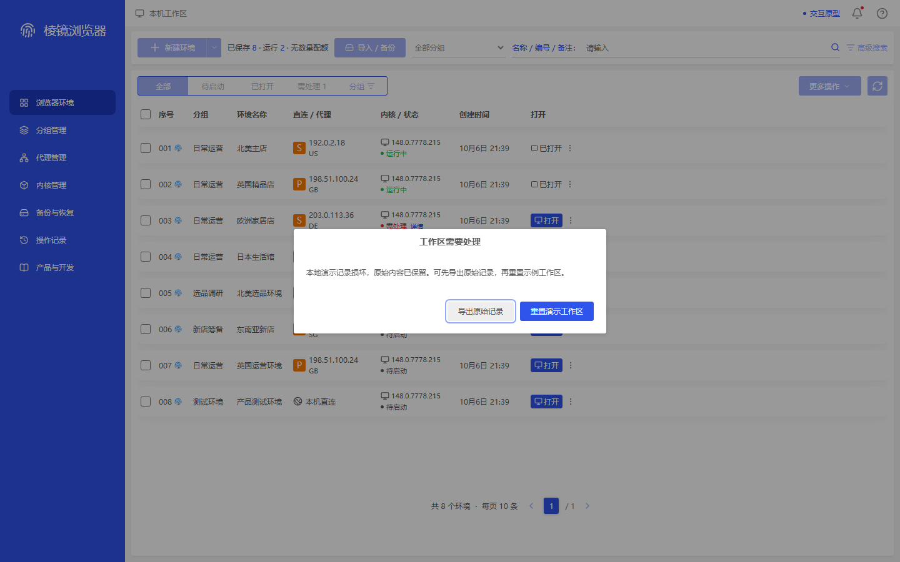
7e91d762e8d885e5b35a54b809fed49675f10f494e50efff677f1774e41ec665
gap-shell-demo-other-page-conflict · 1440×900
FAIL — V-SHELL-CONFLICT-PRIMARY：500×167工作区冲突frame、单遮罩/最高焦点/shell inert正确，但唯一可用重新载入白字浅灰底，视觉上近似禁用。App只在WORKSPACE_LOADING禁用它；通用footer首按钮规则错误覆盖primary背景。应限制中性首按钮样式或覆盖工作区primary，不改实际禁用合同；未重新载入或覆盖冲突记录。
同类参考容器：group-delete-confirm；不是同名原商业执行。
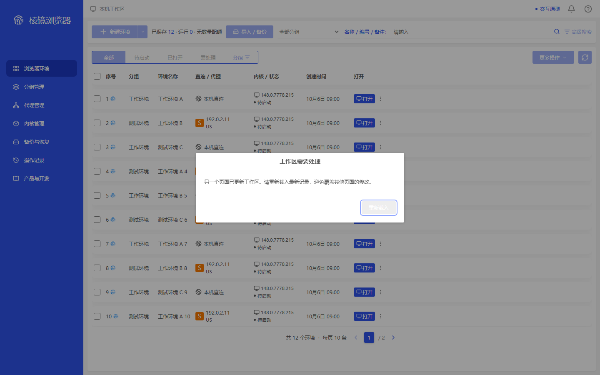
c808418fbac79cb26aa731ccbd2a0c08309ee9e2d39638c5d549b5cc50f04619
gap-shell-maintenance-restore · 1440×900
MAPPED — 完整恢复维护保护及查看恢复任务入口可见，新增状态条使列表整体下移67px；表头y229.859/分页y861.859仍在视口。实际新建preview被合成合同拒绝、0配置提交，不是工具条按钮已禁用或真实恢复验收。
同类参考容器：environment-list；不是同名原商业执行。
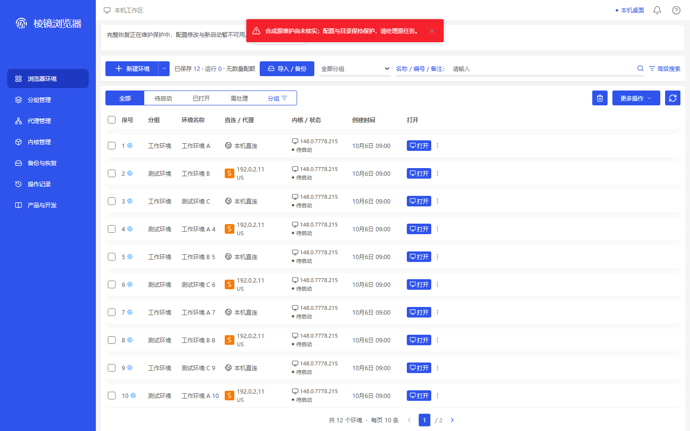
163ca4d1b8e3eeaf02194ec48727435624e8bbc8f3f648ee648f9cdcdab8f63e
gap-shell-maintenance-migration · 1440×900
MAPPED — 合成迁移维护提示和查看试用与迁移入口，原列表没有此维护业务。新建点击后preview明确拒绝，0配置提交，不能说工具条按钮已禁用。67px状态占位后表头y229.859/分页y861.859仍可见，48px行未改变；不证明真实迁移任务。
同类参考容器：environment-list；不是同名原商业执行。
1e91bcd83dfca44733e96662741d1b60609c1c12ec9e342e69564bd72a83f7f7
gap-shell-maintenance-recycle · 1440×900
MAPPED — 合成回收维护保护及打开回收区入口可读，只映射列表shell。新建preview拒绝、0配置修改，不是按钮禁用证明。表头y229.859、分页y861.859/h30位于视口内，短时错误反馈有明确原因；未操作真实回收或目录。
同类参考容器：environment-list；不是同名原商业执行。
15f862f3b8f99ec729dc13bf83d454a20a1f6282ec5cc2c0b22d3ba11f0818e7
gap-shell-demo-page-two-off-page-selected · 1440×900
MAPPED — 当前第2页仅11/12两行，已选2包含页外1项，当前11的勾选正确可见，固定分页显示2/2。原是第一页两项选中，没有同名跨页原态，只借选择表容器；未提交批量动作。
同类参考容器：environment-selected；不是同名原商业执行。
a579a35cf961e133be664df5743146500e023f2b58584fd5ad4150301097c228
gap-shell-demo-more-empty · 1440×900
MAPPED — 当前是工具条低频菜单，不是原单行菜单；未选项的调整分组/移除所选禁用，清除筛选可用，菜单没有切边。表体顶部scrollTop=0，行48px，未提交动作；同容器不构成同名原业务。
同类参考容器：environment-row-menu；不是同名原商业执行。
05463eea7d82f4981e961c47092de9b765e4550173bd755371cbf240c4bbfbdb
gap-shell-demo-more-selected · 1440×900
MAPPED — 已选1个准确ID，低频菜单调整/移除可用，清除筛选保留；这是不同于原单行菜单的内容。tbody.scrollTop=0、首行完整、分页可见，没有批量或移除提交；与未选状态分别审查。
同类参考容器：environment-row-menu；不是同名原商业执行。
9e9b5f77450fac8f67ec5eca446d5262806cb5f87da170aef2b8638b526465e2
gap-shell-demo-group-filter-empty · 1440×900
MAPPED — 仅借分组筛选容器，没有同名原空匹配内容；260×122、x359/y152.359，较原148px高减少匹配行。没有符合条件的分组、全部分组和重置清楚可见，列表原查询未改变，未提交修改。
同类参考容器：environment-group-popup；不是同名原商业执行。
4f8425124c594d7d3ab0725311cdd2b084d7b839f31722461d1c72b2d9298208
gap-shell-demo-group-return-filter · 1440×900
MAPPED — 实际先恢复分组搜索后回到环境页，工作环境筛选及6行可见；左侧参考是组页，不能当直接同页比较。表头40px/行48px及分页可达，标签来自现有环境，没有新增空组实体或提交修改。
同类参考容器：group-list；不是同名原商业执行。
46ccf72cb63d309f6c1e9a3d13557e1a86db91d7779b39f1b0d4452da7bc2d9a
gap-shell-native-page-two-off-page-selected · 1440×900
MAPPED — native第2页只有11/12两项，已选2含页外准确ID，当前11勾选，2/2固定分页完整。原是第一页选择画面，不提供同名跨页业务；只映射选择容器，0批量提交，不扩展到未选环境。
同类参考容器：environment-selected；不是同名原商业执行。
9ebdfcc27a4deeb735f25a63951d0affadc1fd2770eafadcf3bcc3f5dd22111c
gap-shell-native-more-empty · 1440×900
MAPPED — 未选native低频菜单，不是原行菜单；批次结果/清除筛选可用，明确代理、备份、克隆及移除等精确选择动作禁用。菜单完整且tbody顶部0；图含分页正在读取文案，不认证稳定读取已结束或任务完成，没有修改提交。
同类参考容器：environment-row-menu；不是同名原商业执行。
a19234613eccf2ace2e4121f50085bef508c32fa5671ceafdb55f87c5dbf8e67
gap-shell-native-more-selected · 1440×900
FAIL — V-SHELL-NATIVE-MORE-TOP：声明顶部案例却tbody.scrollTop=8，首行y204.859、tbody顶y202.859，首行前仅2px而非10px。48px行与已选1菜单资格正确，但无解释的顶部锚点偏移不能降为容器通过；此尺寸没有截字。先等待native读取稳定并断言实际表体顶端，再另取新证据，未证明真实native滚动因果或提交动作。
同类参考容器：environment-row-menu；不是同名原商业执行。
0f67d14e3b6377398c127ad480a5fba594702206e295a2252b72e83e9a870a15
gap-shell-native-group-filter-empty · 1440×900
MAPPED — native空匹配筛选只借原分组浮层，不存在同名原空筛选。260×122、x359/y152.359，全部分组、重置及没有符合条件说明可见，原查询未改变；表体顶部与固定分页完整。
同类参考容器：environment-group-popup；不是同名原商业执行。
2d73621489a55e5037802bec08d4123c57b771755accbce518ad319d562e65e7
gap-shell-native-group-return-filter · 1440×900
MAPPED — 实际恢复组列表后回到环境路由并查询工作环境，6个匹配项及分组筛选可见；原左侧组页不是同页直接参考。当前页组计数与筛选服务结果范围分别说明，没有假空组/全组修改或业务提交。
同类参考容器：group-list；不是同名原商业执行。
0aa786a64dda2bdef20cbe89ef8e7dd6f10d8115f11988060f19a776e9add283
gap-shell-native-create-menu · 1440×900
ADAPTED — 对应直接创建菜单支持几何，176px宽、锚点与原约1px取整差；原四项裁为新建/批量、导入/备份、批次与逐项结果三项。无云更新/分享入口，native历史增加是声明的能力适配；三行完整，无创建提交，不是严格像素通过。
同类参考容器：environment-create-menu；不是同名原商业执行。
0c2cd6cd65a470f7514d67b89cd7ecba8bf38e85e6c5f4b704e15e90f4b8f37d
gap-shell-native-row-menu · 1440×900
ADAPTED — 对应直接首行菜单，176×224、x904/y247.859；原176×256、x903/y247.875，约1px取整差。七项是云导出/分享/转移裁剪及native明确代理/完整备份增加后的声明适配，行密度及菜单均无切边；未提交业务。
同类参考容器：environment-row-menu；不是同名原商业执行。
9cd17cbb8712f5ae955bb9986e6c2188b311a3a173fad1d1e5f9b4bb134fd43d
gap-shell-native-row-menu-bottom-anchor · 1440×900
MAPPED — 第10行锚点native七项菜单176×224、x904/y668，底端892留8px，无菜单切边；没有同名原底部状态，只借原首行容器。tbody仍scrollTop=0且有8px底部padding余量，只证明末行与菜单可见，不当真正滚底证据；未提交准确目标动作。
同类参考容器：environment-row-menu；不是同名原商业执行。
cc39d066037135903c05c4aab1e73545fb3e3ffcf7bb7dc83701fa5c94d6142d
gap-shell-native-query-no-results · 1440×900
ADAPTED — 对应直接查询无结果表，x220/w1200、表头y162.859/h40、表体68、分页y280.859/h30支持几何对齐。增加清除筛选恢复入口，native回收保留、云功能/配额裁掉，选择未改变；空白不是丢行，不是严格无裁剪通过。
同类参考容器：environment-no-results；不是同名原商业执行。
b8ddaed4222f367cc110293c4b2245eb5be3ae8326989a855ee77d7ccd2d1856
demo-restore-dense-bottom · 1280×800
MAPPED — 恢复预览120/112、1040×592，header40/footer58；12项表体230/756/526、正文494/494/0差0，第12项、seed保留/凭据重填及非完整本机恢复说明可读。footer y646未遮动作，单遮罩/最高焦点有效；仅容器映射，未提交恢复。
同类参考容器：proxy-bound；不是同名原商业执行。

528342378dadb24320aafc9c822df9c2863e33b12d15fe33c9d677fe27684c44
native-restore-dense-top · 1280×800
MAPPED — 预检120/112、1040×592，第一页25项、分页1–25/26；表体230/1510/0仅呈前3项，正文494/514/0还余20px，不充作末段证明。footer y646/h58固定且不遮动作，一个0.4遮罩、最高焦点在内；合成只读ApplyRestore0，仅表格窗口映射。
同类参考容器：proxy-bound；不是同名原商业执行。
c066e94d85b1587ac05ef4b2eea85848433564c6e18292a41312227613db798e
native-restore-dense-bottom · 1280×800
MAPPED — 预检120/112、1040×592，表体230/1510/1280及正文494/514/20均滚底差0；第25项、有效期与重验尾说明完整，footer y646/h58不遮。上缘/表头随指定bottom离开是滚动，仍1–25/26；单遮罩/最高焦点有效，ApplyRestore0，仅容器映射。
同类参考容器：proxy-bound；不是同名原商业执行。
875d95aefe709e6b6c2401a9a90fe2ca523fda6029a8023e394d8d8d9377532e
native-restore-dense-page-two · 1280×800
MAPPED — 预检120/112、1040×592，仅第26项实际可见，分页26–26/26、上页可用/下页禁用；offset0/25同一合成预检，表体118/118/0、正文494/494/0，包摘要与身份保护保留。footer y646/h58、单遮罩/最高焦点正常，未提交恢复，仅容器映射。
同类参考容器：proxy-bound；不是同名原商业执行。
f27511362172c6c76eda48d35186961216800b9b3bea92485cac994b64c3110d
native-restore-dense-page-error · 1280×800
MAPPED — 预检120/112、1040×592，offset0/25后第26项读取失败；tbody一行为错误占位，不是成功环境。STORAGE_READ_FAILED/重读/不提交说明完整，下一步禁用，表体118/118/0及正文494/494/0；单遮罩/最高焦点有效，未重读或恢复，仅失败容器映射。
同类参考容器：proxy-bound；不是同名原商业执行。
acd9139b0df24e3048024c35787d28d583c6611666785600486dc67c91726045
native-diagnostics-minimal-bottom · 1280×800
MAPPED — 最小诊断330/118、620×580，正文482/516/34滚底差0、footer y640/h58；不可读工作区、0/0/0、STORAGE_READ_FAILED、不可读取节1及有效期尾说明可读。实际展示有限安全投影，不是raw JSON所有字段；单遮罩/最高焦点有效，未保存，仅诊断容器映射。
同类参考容器：proxy-edit；不是同名原商业执行。

b7ba336ca50509c663370de30ef05a84448bb2b3b394302a63b84027776f2a94
workspace-fault-diagnostic-bottom · 1280×800
MAPPED — 最高162诊断330/118、620×580，正文482/488/6滚底差0、footer y640/h58；可见frames2，160故障层inert/alpha0，仅162有0.4遮罩、最高焦点在内。partial数量/安全投影与有效期尾段真实可读，关闭/返回/保存无覆盖；未导出，仅容器映射。
同类参考容器：proxy-edit；不是同名原商业执行。

74b5d48959b6d9ca85d5665efcf28a4d6777bf5ef343b7b1c9ccf420eaec4af7
workspace-cookie-fault-diagnostic-bottom · 1280×800
MAPPED — 最高162诊断330/118、620×580，正文482/488/6差0、footer y640/h58；可见frames3：80 Cookie及160故障层inert/透明，仅162有0.4遮罩且focusInside。Cookie有值但disc遮蔽，保存断言输入保留；通知不挡标题，安全投影尾段完整，未保存，仅容器映射。
同类参考容器：proxy-edit；不是同名原商业执行。
6ab167a690a89623166d222830c81d8cce043602ecc3a94121210a795a3a6b42
native-activity-session-old · 1280×800
MAPPED — 旧会话详情330/188、620×440，正文342/342/0、footer y570/h58；旧记录不能控制后来会话警示完整，没有核对或force入口，返回/关闭可见。单0.4遮罩、最高焦点在内，控制派发0；只映射只读详情容器，不验收真实会话控制。
同类参考容器：proxy-edit；不是同名原商业执行。

d694111b032987bc3857eabb81c14c535aede4c05ec06964f6a083814fc8ba7b
native-activity-session-reconcile · 1280×800
MAPPED — 详情330/188、620×440，正文342/342/0、footer y570/h58；准确匹配同一待核对会话，核对按钮可用，没有force入口，警示与返回完整。一个0.4遮罩、最高焦点在内；截图控制派发0，未点击核对，只读详情容器映射。
同类参考容器：proxy-edit；不是同名原商业执行。
8b84cbec7613d992b14f8bba6a82ea96400a27e7391927f9d4648ac07dc4bcb5
native-activity-session-pending · 1280×800
MAPPED — 详情330/188、620×440，正文342/342/0、footer y570/h58；真实处理器的同会话核对在途，按钮禁用且返回/警示保留。单遮罩、最高焦点有效；准确合成Runtime.Reconcile挂起，清单保存释放/入口移除恢复断言，非本轮重跑；仅容器映射。
同类参考容器：proxy-edit；不是同名原商业执行。

8ad59623e0f9b32e40a9779308645bdea6960e7c399bfecb1b3ded78f100bbc7
native-activity-session-force-confirm · 1280×800
MAPPED — 124危险确认440/299.5、400×217，身份/未保存内容警示、取消及红确认完整；122详情330/188、620×440现inert=true且alpha0，最高focusInside=true、单0.4遮罩。force/reconcile派发0；本图满足下层隔离，旧两条FAIL不倒改，仅确认容器映射。
同类参考容器：group-delete-confirm；不是同名原商业执行。

3b3e32659c15ff5b374507025f7c3afe845ae01f003c8cbdcd7a0d7127b7e858
native-groups-list · 1280×800
ADAPTED — 对应原组列表支持框架，两组各5明确为当前已读页，原各6的数据差异已说明；无独立空组/删除/归属/排序假入口。48px行与40px表头是图片及源码观察，该表未被本次selector采样，不称逐格DOM测量；未提交改组。
同类参考容器：group-list；不是同名原商业执行。
9db1726c6f5d3fe0a29edd27a375f516030f37195931d58348d1aacd395ff07e
native-groups-edit · 1280×800
ADAPTED — 原组编辑frame直接对齐为500×339.859、x390/y238.062、header40/footer51；native实际只修改已读当前页5个准确成员，原6成员/排序/归属裁掉且范围说明完整。取消/应用分组可见，单遮罩/最高焦点/shell inert正确，未提交；不冒称全组重命名。
同类参考容器：group-edit；不是同名原商业执行。
d7ff7c7a9c9e7644330c816da3fe1103f8a12590ae98e9c24cd85b8eaa6300e7
native-groups-no-results · 1280×800
MAPPED — 原组列表只有非空正文，当前native无匹配内容只借组页容器。搜索条件、空结果解释与环境标签/当前页范围说明可读，没有虚假空组实体或删除按钮；不把同容器当同名原空态，未提交修改。
同类参考容器：group-list；不是同名原商业执行。
6287539c1f78996d6da674b5b50f9ad13e7e73ab8d72f635700a72c37c9826f1
native-environment-more-menu · 1280×800
MAPPED — native未选低频菜单复用同类frame，并非原单行菜单；支持批次结果，精确选择动作按无选择禁用，清除筛选可用。菜单和固定分页可见，没有运行/取消任务提交；与不同菜单内容不互相替代。
同类参考容器：environment-row-menu；不是同名原商业执行。
fb2ed21fef495964a28d69958e26d6313014be735e2192340bd740805a683171
native-environment-fifo-menu · 1280×800
MAPPED — 新增合成starting/FIFO条、取消排队入口和错误/资源/待保存密集行，原无同名状态；低频菜单只借176px容器。31px状态位使表头y193.859/分页y725.859，白行48px保持，可见控件未切边；未提交取消/控制，不是实际启动队列验收。
同类参考容器：environment-row-menu；不是同名原商业执行。
332628f04eb0449f7d136aacefa4d8b34c6428700b2c3fe62fd66f233a39208d
native-environment-create-no-kernel · 1280×800
MAPPED — 无verified构建的指纹区域分支，不是原创建顶部态；660px主frame/top40/bottom8、header40/footer71、外rail40。正文641/1556/top880并非顶部或真正滚底；准备引导与缺内核说明可见，创建/创建并打开禁用，create/start=0。刷新短时提示不是创建成功，临时遮标题左侧，不认证稳定顶部标题。
同类参考容器：environment-create；不是同名原商业执行。
7de53bcc273cf92f0a3426e545cffc294213ec5da42f40487a3409e66f5416a2
demo-proxy-check-details-unchecked · 1280×800
MAPPED — 620×186 短详情明确尚未检测、没有真实出口/认证；正文与固定确定按钮不裁剪；只有代理编辑容器映射，未制造原检测执行图。
同类参考容器：proxy-edit；不是同名原商业执行。
78b9d7c84f7e819c17e18a4c5cc8d43cb291cbb9b45960452196699de567185a
demo-proxy-check-details-connected · 1280×800
MAPPED — 620×186 短详情，模拟可连接且没有真实出口/认证，固定确定按钮完整；原无同名检测详情，仅借代理编辑 frame，不是启动许可。
同类参考容器：proxy-edit；不是同名原商业执行。
49029116b979dba8b6389933a28477f63eeef0182797d32652e7f0b7a77b0abe
demo-proxy-check-details-failed · 1280×800
MAPPED — 620×186 短详情，明确模拟失败且绑定不退直连；无真实出口/认证，确定按钮可见；原无同名详情，不把完成提示当连接成功。
同类参考容器：proxy-edit；不是同名原商业执行。
6971c8e3f29c3fcc50f52c88ceb8397ff43833148cc2c73352ff5e4a609564e9
native-proxy-check-details-current · 1280×800
MAPPED — 620×544 当前匹配报告，合成IP/36ms/三个阶段及TLS/DNS边界完整，确定footer可见；明示观测不是启动许可。原没有独立详情图，仅620代理frame映射。
同类参考容器：proxy-edit；不是同名原商业执行。

bbf6ea6e971996c0cf0fb7006d8fa81625a9a6b619ff5d4318584926e7964931
native-proxy-check-details-failed · 1280×800
MAPPED — 620×574 失败详情，未取得出口、红色PROXY_AUTH_FAILED、认证失败/目标不支持且不退直连；三行阶段与固定确定不裁剪。报告不作启动许可；无原同名操作图。
同类参考容器：proxy-edit；不是同名原商业执行。
d33390314c10cdcedecae3ad92525d9f6e5b7a4cdfc50240e766a5cea894402f
native-proxy-check-details-stale · 1280×800
FAIL — 620×234框和确定按钮完整，旧IP/阶段报告已正确隐藏，但首行仍说本次检查通过，与暂无本次安全报告冲突。NativeProxyManager:88须按当前匹配报告/任务派生标题，不能只用旧connected。
同类参考容器：proxy-edit；不是同名原商业执行。
85f95666f0a131c103f8f4cb33076014136536664aee0dda2ece850f029d36bb
native-proxy-check-details-empty · 1280×800
MAPPED — 620×234 空详情，尚未检查/没有本次安全观测、不推断出口或认证成功；无阶段/IP/假成功，固定确定按钮清楚。无同名原详情，容器映射而非严格1:1。
同类参考容器：proxy-edit；不是同名原商业执行。
51e7133b518005b5fd2ff2bfbc806a05fb1fe6d5eda14ccd8f2859926bf27b8a
native-proxy-check-details-running · 1280×800
MAPPED — 620×544 在途报告未完成、出口未取得、认证进行中/目标不支持；保存记录首行尚未检查，不是成功终态。阶段和启动许可限制完整，固定确定可见；无原同名运行图。
同类参考容器：proxy-edit；不是同名原商业执行。
7fd79bfe3d06c3c1c42e437fc6e86a14837fbce42862486e25c4c034ce5ec90a
native-proxy-check-details-persistence-pending · 1280×800
MAPPED — 620×544 待保存报告明确尚非持久终态，合成IP和阶段可读但不作启动许可；确定footer不遮正文，列表仍标结果待保存。原无同名任务图，仅620容器映射。
同类参考容器：proxy-edit；不是同名原商业执行。
a6d29f6b1746cc8c02a5d0d612754d490b57456721771490411d5361512c6440
native-proxy-edit-replace-authentication-top · 1280×800
ADAPTED — (330,45)620×726贴近原编辑位置/高度；32px下划线密集表单，明确replace和两个新秘密遮罩，旧值不回填。正文全容纳、取消/保存footer可见；安全字段替换商业字段，未提交更新。
同类参考容器：proxy-edit；不是同名原商业执行。
bbfb1fb9e59790aee5e2056799cc477cfa20b18c5d24060cfb52fc929470b7c1
native-proxy-edit-replace-authentication-bottom · 1280×800
ADAPTED — 620×726编辑近似原620×726.156；新账号/密码各password遮罩，旧值不回显，TLS/DNS和固定保存footer完整。body628/628、scrollTop0，与top同SHA，bottom不是非零滚动证明。
同类参考容器：proxy-edit；不是同名原商业执行。

bbfb1fb9e59790aee5e2056799cc477cfa20b18c5d24060cfb52fc929470b7c1
native-proxy-bound-six-selected-comparable · 1280×800
ADAPTED — 原/实现均6行6选中；(120,112)1040×592近似原1040×592.25，不是1050。真实scope六个合成ID，支持列替换备注、精确分配footer完整；只全选该页，未提交分配。
同类参考容器：proxy-bound；不是同名原商业执行。
818782d738c176b613885404c56ad81f5e6b8b423ec8a6bf2f4321cac471f5d2
native-row-owned-control-lost-force-confirm · 1280×800
MAPPED — 仅映射400px危险确认，无同名原Job业务；400×217、x440/y299.5，准确环境/当前会话及未保存风险完整，取消/红色确认可见。canControl=false但canForce=true、needsReconcile=false；120层唯一frame、焦点在内、单遮罩/shell inert，force/reconcile调用0。无下层活动详情，不能据此认证其隔离或真实Job。
同类参考容器：group-delete-confirm；不是同名原商业执行。
4da4781fc39ceeaed8d698bacbc0ba3f57692a05e55dd15d4690616fe3b92fcd
native-activity-owned-control-lost-force-confirm · 1280×800
MAPPED — 准确会话确认440/299.5、400×217，危险文案及取消/红确认完整。普通通道不可用但服务canForce=true、needsReconcile=false；124最高焦点在内，122详情330/188、620×440已inert/透明，只有一层0.4遮罩。force派发0；不声称取消恢复焦点实测或真实结束。
同类参考容器：group-delete-confirm；不是同名原商业执行。
c8ede556a0ecbe791cf391933ae93766bd6cec8b871cda3aceb84b2bf39a3fb5
demo-backup-upload-hover · 1280×800
MAPPED — 导入演示快照窗390/228.5、500×359，正文261/261/0、footer58；上传按钮hover实际白字/白边、白色0.1透明背景，蓝头上清晰，焦点在最高层且单0.4遮罩。文件未选、预览禁用，未调用选择器；仅导入容器映射。
同类参考容器：proxy-import-text；不是同名原商业执行。
305626dd8f3fdeccfd33c7579dfabdba3c638d61f9b4a1f39535935b199b3974
native-backup-upload-hover · 1280×800
MAPPED — 本机备份导入窗390/228.5、500×359，正文261/261/0、footer58；按钮hover白字/白边和白色0.1背景在蓝头可读，焦点在最高层、单0.4遮罩。prismbackup与演示JSON界线明确，未选文件/预览禁用，无选择器或导入提交；仅容器映射。
同类参考容器：proxy-import-text；不是同名原商业执行。
5b92f288dabc84f9756184fd478334512557e38c39c211c578c9cfec673991df
current-demo-guide-user · 1280×800
MISSING — MISSING_DIRECT_HELP：使用指南标题/正文真实呈现，480/151/780/630、scroll3112/top0；索引260、正文780对应25%/75%。原40px标题归一化后正文另下移约52.42px，为真实只读工具条适配；仍没有完整原指南。
同类参考容器：settings-page；不是同名原商业执行。
c084a92ae7c1c8104c63e61e93606b0d97673a0dd0cc994b4591e13fbfe05de9
current-demo-guide-user-bottom · 1280×800
MISSING — MISSING_DIRECT_HELP：验收/能力依据及最后链接实际可见，正文480/151/780/630，630/3112/2482差0；索引260、四页签和上方下载固定，不是loading。真实滚底与比例修复是局部证据，不证明完整原帮助已恢复。
同类参考容器：settings-page；不是同名原商业执行。
8ca4d37d354f309fad0eacfe14ab9daf25ed3536f6afa846331f2bae83ea2f20
current-demo-guide-prd · 1280×800
MISSING — MISSING_DIRECT_HELP：PRD标题、正文与表格确实加载，480/151/780/630、scroll9937/top0；25%索引260已修复，12px正文与Markdown层级为内容适配。未见未解释横裁切，但原基础设置不补同名帮助参考。
同类参考容器：settings-page；不是同名原商业执行。
21bcc5c9d6a162b23a90909596e0a56dbf6e990c2fe7e39e9e03a3d85c74ba25
current-demo-guide-prd-bottom · 1280×800
MISSING — MISSING_DIRECT_HELP：来源边界末章及最终说明真实完整，正文480/151/780/630，630/9937/9307滚底差0；索引260、页签与下载保留。底部上缘从前表滚出是指定位置，不是末段被遮；不把设置候选代作原PRD。
同类参考容器：settings-page；不是同名原商业执行。
426b27a3ac7570e542fef9b344b12ec0badc03ce8aa397a5f8f5ec5a077b5c92
current-demo-guide-development · 1280×800
MISSING — MISSING_DIRECT_HELP：开发方案标题、正文与层级表真实可见，正文480/151/780/630、scroll18559/top0，索引260与25%相符。四文档/Markdown/上方下载为只读适配；原40px桌面标题先归一化，不声称原指南通过。
同类参考容器：settings-page；不是同名原商业执行。
546ffd8c3d23f7a230360b7d46d23bb51cd2b404a329635bd9411227ec388281
current-demo-guide-development-bottom · 1280×800
MISSING — MISSING_DIRECT_HELP：开发方案尾章与最终说明实际呈现，正文x480/y151、780×630，630/18559/17929滚底差0；索引260保持25%，四页签/下载未滚走。原基础设置只补容器，不补完整原帮助。
同类参考容器：settings-page；不是同名原商业执行。
88f088fe4febb458ed2758ae1ff4b184ac71191130b0d1580a40474e894b4bde
current-demo-guide-kernel · 1280×800
MISSING — MISSING_DIRECT_HELP：内核合同实际标题、需求表与正文，480/151/780/630、scroll10244/top0；索引260保持25%，不再漂移为230。四文档和只读下载有真实内容依据，但原设置七页签不提供同名完整原指南。
同类参考容器：settings-page；不是同名原商业执行。
c89343b64d7c0b2b609f222c6c6f08587d5156cc4fc1a30850b81ac75286c476
current-demo-guide-kernel-bottom · 1280×800
MISSING — MISSING_DIRECT_HELP：实现完成条件及许可/未验尾说明完整，正文480/151/780/630，630/10244/9614差0；索引260、四页签及下载固定。设置末项不是内核指南末段，比例修复不能消除直接参考缺失。
同类参考容器：settings-page；不是同名原商业执行。
728fde44f3daf58fd1289c08f2b5ff468b87765bd1b3bad88998e56925420fc7
native-migration-current-select · 1280×800
MAPPED — (120,112)1040×592 选择窗，尚未选定环境/目标时差异禁用；安全说明、查询分页和关闭footer完整。原没有迁移选择图，按1040列表容器，不把左侧创建drawer说成直接参考。
同类参考容器：environment-create；不是同名原商业执行。
53402249cc9ffd828d5668404051e0ba7d353cfe21cb0a19e5bd77d6ea97b3cc
native-migration-current-diff · 1280×800
MAPPED — 1040×592 双列选择和两行差异，原修订7/固定seed180000035/精确构建/绑定代理失败不直连可见，footer清晰；技术详情折叠。正确容器为proxy-bound，不是配对左侧660 drawer。
同类参考容器：environment-create-fingerprint；不是同名原商业执行。
c283194183578316f61f0627abbff9c3f979a7f46e1af5870f60830d3cf8eb8c
native-migration-current-trial-confirm · 1280×800
MAPPED — 400×220 试用确认，仅独立副本/原环境停止/保存代理不直连，checkbox未勾选且确认禁用；尚无Prepare，footer完整，低层inert。短危险确认容器映射，无原试用执行图。
同类参考容器：group-delete-confirm；不是同名原商业执行。
df518d9934f34472a5d7d75dea96fc8122d9c456c71def7ca1381b9564b30a14
native-migration-current-trial-starting · 1280×800
MAPPED — 400×373 开始读参数合成阶段，备份已核对但退出/提交未完成，尚无旧新采样；取消原任务与关闭可见，不提供切换。无原同名启动状态，仅400结果frame映射。
同类参考容器：proxy-edit；不是同名原商业执行。
b56faec3867cf16947b2ff13381e115191653d90e741aa043316dd61bcf22fdf
native-migration-current-trial-running · 1280×800
MAPPED — 400×505 正在试用合成副本，退出未确认/未提交，正常停止与取消保留原状态并列；旧新合成读回和网站兼容限制完整。400结果容器映射，非真实运行证据。
同类参考容器：proxy-edit；不是同名原商业执行。
4caccc4782350c20f955efe469f4bef8ac3a8e6e9015bb6b41389c0cd3cbdecb
native-migration-current-ready · 1280×800
MAPPED — 400×505 结果明确副本已停止等待确认，退出已确认、配置尚未提交；明确切换与保留原状态按钮分开且可见，固定footer不挡正文。无原同名ready图。
同类参考容器：proxy-edit；不是同名原商业执行。
a90a18c98b68087b96fe24eda485052c32f67c5259da8a0e463861ca3d9e1b9d
native-migration-current-switch-confirm · 1280×800
MAPPED — 400×202 最上层切换确认，固定seed/默认不变/升级前完整恢复警告清晰，未勾选且确认禁用；commit调用0，之前一次Action是正常停止。较低两窗inert、单遮罩；无原同名切换图。
同类参考容器：group-delete-confirm；不是同名原商业执行。
21881548fe84a360efdb296a7fd227c494b87935d7af236c31e4099701894c48
native-migration-current-committed · 1280×800
MAPPED — 400×505 结果明确配置已提交仍核对目录、维护保护未解除；关闭 footer 完整，取消按钮不误作未提交取消；原无同名状态，按400结果容器而非620代理表单映射。
同类参考容器：proxy-edit；不是同名原商业执行。
b9987701c9cccb4a731e0e734e39cb51ad58ca6c8711c1a9ab6deab20e076c42
native-migration-current-completed · 1280×800
MAPPED — 400×444 迁移完成合成终态，备份/退出/提交摘要均明确，旧新采样及网站兼容警告可读；仅关闭、无遗留切换按钮。无同名原图，不证明真实迁移完成。
同类参考容器：proxy-edit；不是同名原商业执行。
018d269c001c4c63d71f80cf2b4ef08956f4c829e7b25bc95e64c2e68d0aaa83
native-migration-current-protected · 1280×800
MAPPED — 400×594 结果未确认、保持保护和错误原因完整，原任务核对入口可见，不允许切换/未授权停止；下层inert、单遮罩、footer仍在屏内。无原同名保护状态。
同类参考容器：proxy-edit；不是同名原商业执行。
9899b92af7872cef4e9b27d060154773bf27e891f5119cb166ba1b0fcf90166e
native-migration-current-cancelled · 1280×800
MAPPED — 400×444 原任务结果明确原状态已保留，备份/退出/未提交摘要及旧新合成采样可读，只保留关闭；1040 选择窗 inert，单遮罩。原无同名取消图。
同类参考容器：proxy-edit；不是同名原商业执行。
916c16333434768fa1d3a40c46a1396469e5294520ff279de9cffd8e5afa24c0
native-migration-current-upgrade-preflight · 1280×800
MAPPED — 1040×592 迁移历史及升级前预检显示恢复1/覆盖1、缺内核0/冲突0和verified-bytes旧构建，撤回数据警告与确认入口完整；仅预检不提交。映射proxy-bound容器，不是同名原业务。
同类参考容器：proxy-bound；不是同名原商业执行。
02d2f8fe0cabc09bee40e04a6323ca17ab5738accdf3c26abc3fa94e0545ca52
native-migration-current-upgrade-confirm · 1280×800
MAPPED — 400×262 最高恢复确认三项警告未勾选：覆盖1项、凭据重输1项、正常停止；确认禁用且ApplyRestore=0。原ID/seed/包外保留说明完整，层122高于92且单遮罩；无同名原恢复图。
同类参考容器：group-delete-confirm；不是同名原商业执行。
66cdc405a482b0addadb7ee6361cf15532fe58460131ead8f1a33dd2550d1f79
native-migration-current-upgrade-result-rollback · 1280×800
MAPPED — 400×266 恢复未完成已回滚，环境1/切换0/未完成和红色回滚错误清晰；旧状态保留但没有成功，返回footer不裁剪。400结果frame映射，无同名原恢复执行图。
同类参考容器：proxy-edit；不是同名原商业执行。
de9dfea8728acb83fba072da88b33a0b9fdb3290283f3fa5f99aa727b8a9290f
native-migration-current-upgrade-result-protected · 1280×800
MAPPED — 400×361 恢复未完成/维护保护，环境1/切换0/未完成与红色错误一致；保留日志/目录保护和原核对建议，重试入口及返回完整。单遮罩、最高层122；原无同名状态。
同类参考容器：proxy-edit；不是同名原商业执行。
80ba5a7471694a3f85bd67ddbecc0b1e86f87d11f08484a08ddb2e11915de8d4
native-migration-current-upgrade-result-completed · 1280×800
MAPPED — 400×240 完整恢复合成完成，环境1/切换1/已确认完成，原ID与seed保留并提示原Windows用户核验；返回footer可见、低层inert。400结果映射，不证明真实备份/磁盘恢复。
同类参考容器：proxy-edit；不是同名原商业执行。
85dd85ebf60424a8d6946257f6f94cc5eb1234bfc8815a21e08649b7f7a21c73
gap-shell-workspace-loading · 1280×800
MAPPED — 没有同名原加载业务，500×167、x390/y316.5公共工作区frame；WORKSPACE_LOADING重新读取确实禁用，无诊断入口。最高160层焦点在内、唯一遮罩、shell inert，不能与冲突的实际可用恢复按钮混淆；没有读取/写入真实工作区。
同类参考容器：group-delete-confirm；不是同名原商业执行。
6dbe8efa6fa7fae0df62082e3aacd772171931453870ac9d8953dace06683abe
gap-shell-demo-damaged-record · 1280×800
MAPPED — 没有同名原坏记录界面，仅公共工作区frame映射；500×167、x390/y316.5，最高160层单遮罩、焦点在内、底层shell已inert屏蔽。原记录保留及导出原始记录/重置演示工作区可见；没有执行导出或重置，不是原400px删除业务。
同类参考容器：group-delete-confirm；不是同名原商业执行。
552a65265006bce67091d4fb37144f67428addac393341b8708e3b6687d82274
gap-shell-demo-other-page-conflict · 1280×800
FAIL — V-SHELL-CONFLICT-PRIMARY：500×167工作区冲突frame、单遮罩/最高焦点/shell inert正确，但唯一可用重新载入白字浅灰底，视觉上近似禁用。App只在WORKSPACE_LOADING禁用它；通用footer首按钮规则错误覆盖primary背景。应限制中性首按钮样式或覆盖工作区primary，不改实际禁用合同；未重新载入或覆盖冲突记录。
同类参考容器：group-delete-confirm；不是同名原商业执行。
093923579f0cc5cfac0267b10506dfefd98f539230f123f2b253233c3be830be
gap-shell-maintenance-restore · 1280×800
MAPPED — 完整恢复维护保护及查看恢复任务入口可见，新增状态条使列表整体下移67px；表头y229.859/分页y761.859仍在视口。实际新建preview被合成合同拒绝、0配置提交，不是工具条按钮已禁用或真实恢复验收。
同类参考容器：environment-list；不是同名原商业执行。
c2565e6623cfae1fc6472a0de92fb3699338c0fe076175989f5df9ac59760a5f
gap-shell-maintenance-migration · 1280×800
MAPPED — 合成迁移维护提示和查看试用与迁移入口，原列表没有此维护业务。新建点击后preview明确拒绝，0配置提交，不能说工具条按钮已禁用。67px状态占位后表头y229.859/分页y761.859仍可见，48px行未改变；不证明真实迁移任务。
同类参考容器：environment-list；不是同名原商业执行。
76480064a6cec9e0e05e4ca2a2b50fef99f11ec4b025aa7370a78ac80434c886
gap-shell-maintenance-recycle · 1280×800
MAPPED — 合成回收维护保护及打开回收区入口可读，只映射列表shell。新建preview拒绝、0配置修改，不是按钮禁用证明。表头y229.859、分页y761.859/h30位于视口内，短时错误反馈有明确原因；未操作真实回收或目录。
同类参考容器：environment-list；不是同名原商业执行。
d00af0238dc452091e980e5e3d658947831a3e86ce7cb648f07489676869aa9f
gap-shell-demo-page-two-off-page-selected · 1280×800
MAPPED — 当前第2页仅11/12两行，已选2包含页外1项，当前11的勾选正确可见，固定分页显示2/2。原是第一页两项选中，没有同名跨页原态，只借选择表容器；未提交批量动作。
同类参考容器：environment-selected；不是同名原商业执行。
6639917e7a601cd46433440924c00bdc411f44c560cb616a4128bbe602d6d5dd
gap-shell-demo-more-empty · 1280×800
MAPPED — 当前是工具条低频菜单，不是原单行菜单；未选项的调整分组/移除所选禁用，清除筛选可用，菜单没有切边。表体顶部scrollTop=0，行48px，未提交动作；同容器不构成同名原业务。
同类参考容器：environment-row-menu；不是同名原商业执行。
4ce5239e69283b9f595dc77bb95b6be379dc34f7349e8cc3bc68d34f5ed68f58
gap-shell-demo-more-selected · 1280×800
MAPPED — 已选1个准确ID，低频菜单调整/移除可用，清除筛选保留；这是不同于原单行菜单的内容。tbody.scrollTop=0、首行完整、分页可见，没有批量或移除提交；与未选状态分别审查。
同类参考容器：environment-row-menu；不是同名原商业执行。
a99a35a0ae119d509977f274391831cfe6846e9a5db084fa1e66f9e44f82b003
gap-shell-demo-group-filter-empty · 1280×800
MAPPED — 仅借分组筛选容器，没有同名原空匹配内容；260×122、x359/y152.359，较原148px高减少匹配行。没有符合条件的分组、全部分组和重置清楚可见，列表原查询未改变，未提交修改。
同类参考容器：environment-group-popup；不是同名原商业执行。
72d4cdef8f5d0c4a22a7bcf97548cf8c6b138016f14da6c97dfa743ae796bea9
gap-shell-demo-group-return-filter · 1280×800
MAPPED — 实际先恢复分组搜索后回到环境页，工作环境筛选及6行可见；左侧参考是组页，不能当直接同页比较。表头40px/行48px及分页可达，标签来自现有环境，没有新增空组实体或提交修改。
同类参考容器：group-list；不是同名原商业执行。
a62cec86a9426c695f303ec39e1446522b1690470afb326cc297ec37876c9ee7
gap-shell-native-page-two-off-page-selected · 1280×800
MAPPED — native第2页只有11/12两项，已选2含页外准确ID，当前11勾选，2/2固定分页完整。原是第一页选择画面，不提供同名跨页业务；只映射选择容器，0批量提交，不扩展到未选环境。
同类参考容器：environment-selected；不是同名原商业执行。
825dc4ff101e503925ca18c34cf0d00f19be381e4ee43ed5aa66f828c7f735e4
gap-shell-native-more-empty · 1280×800
MAPPED — 未选native低频菜单，不是原行菜单；批次结果/清除筛选可用，明确代理、备份、克隆及移除等精确选择动作禁用。菜单完整且tbody顶部0；图含分页正在读取文案，不认证稳定读取已结束或任务完成，没有修改提交。
同类参考容器：environment-row-menu；不是同名原商业执行。
b51b32c3dc3e727579f116a06222bf4a764f2dfa245b367f147faa6155241096
gap-shell-native-more-selected · 1280×800
FAIL — V-SHELL-NATIVE-MORE-TOP：声明顶部案例却tbody.scrollTop=26，tbody顶y202.859、首行y186.859，第一行上部约16px被截；行高仍48，不是密度改变。已选1与菜单资格正确不能消除锚点错误。先等待native读取稳定并断言实际表体顶端，再另取新证据；静态图不证明真实native自动滚动因果，未提交动作。
同类参考容器：environment-row-menu；不是同名原商业执行。
89840cc470c4791836279c78c3c3e988744596c7e50bba99d53cfe53b86983a3
gap-shell-native-group-filter-empty · 1280×800
MAPPED — native空匹配筛选只借原分组浮层，不存在同名原空筛选。260×122、x359/y152.359，全部分组、重置及没有符合条件说明可见，原查询未改变；表体顶部与固定分页完整。
同类参考容器：environment-group-popup；不是同名原商业执行。
fb5ac64d8d7393ac6636cabab8477a34fd2683b696003b93a2648f2444f35964
gap-shell-native-group-return-filter · 1280×800
MAPPED — 实际恢复组列表后回到环境路由并查询工作环境，6个匹配项及分组筛选可见；原左侧组页不是同页直接参考。当前页组计数与筛选服务结果范围分别说明，没有假空组/全组修改或业务提交。
同类参考容器：group-list；不是同名原商业执行。
0f48dff8b12e29b23618a0bf63e923a3befe1b155a88d79a922c71eb85686b31
gap-shell-native-create-menu · 1280×800
ADAPTED — 对应直接创建菜单支持几何，176px宽、锚点与原约1px取整差；原四项裁为新建/批量、导入/备份、批次与逐项结果三项。无云更新/分享入口，native历史增加是声明的能力适配；三行完整，无创建提交，不是严格像素通过。
同类参考容器：environment-create-menu；不是同名原商业执行。
afc5a8e924d43cfde43b92adea1c67549555419a897ff70528617585585b1712
gap-shell-native-row-menu · 1280×800
ADAPTED — 对应直接首行菜单，176×224、x904/y247.859；原176×256、x903/y247.875，约1px取整差。七项是云导出/分享/转移裁剪及native明确代理/完整备份增加后的声明适配，行密度及菜单均无切边；未提交业务。
同类参考容器：environment-row-menu；不是同名原商业执行。
f277dba77432998abb5764aa9828a6beaee2b1c553183f7663311ddc4ee031c6
gap-shell-native-row-menu-bottom-anchor · 1280×800
MAPPED — 实际第10行锚点的native七项菜单176×224、x904/y568，底端792留8px，无切边；tbody滚108/最大108。没有同名原底部行菜单，只借原首行容器；目标准确第10项，完整备份/明确代理可见，未提交动作。
同类参考容器：environment-row-menu；不是同名原商业执行。
80260a37b9d0bc795481378f5fd62c22d5123e47ab29211457e501d23949f36b
gap-shell-native-query-no-results · 1280×800
ADAPTED — 对应直接查询无结果表，x220/w1040、表头y162.859/h40、表体68、分页y280.859/h30支持几何对齐。增加清除筛选恢复入口，native回收保留、云功能/配额裁掉，选择未改变；空白不是丢行，不是严格无裁剪通过。
同类参考容器：environment-no-results；不是同名原商业执行。
14ffc1f63dcc9e8bd73b40dbc3624324029f9745233ac0e26d6d20d07703030d